1.
Több, mint fél napig tartott az út Yaztromo tornyos kőházáig, ahová piszkosan és éhesen érkeztél meg. Kicsit nehezen találtál rá, mert az ösvénytől vagy tizenöt méterre bújik meg a Fekete Erdő szélén. Amikor végül is rálelsz, megkönnyebbülten mész oda hatalmas tölgyfa ajtajához, hisz igaznak bizonyult az, amit Nagyláb félig eszméletlen állapotában elmondott neked. A bejárati ajtó fölött egy nagy rézharang és egy gong lóg. Amikor megkongatod a harangot, annak bongó hangja megtöri az általad eddig még soha nem tapasztalt hatalmas csöndet, és végigfut a hideg a hátadon. Egyetlen madár vagy állat hangját sem lehet hallani. Kissé szorongva állsz az ajtó előtt, amikor a toronyból vezető lépcsőn közelgő léptek zaját hallod. Az ajtóban egy kicsinyke kémlelőablak nyílik ki, és két vizsla szem jelenik meg benne: - Ki van ott? - kérdi egy mogorva hang a nyíláson át.
Azt feleled neki, hogy Yaztromót, a mestermágust keresed, mert szeretnél tőle néhány olyan varázstárgyat vásárolni, amellyel megküzdhetsz a Fekete Erdő teremtményeivel.
- Ó! Ha így áll a dolog, és szeretnéd megvenni néhány portékámat, akkor csak gyere! Én vagyok Yaztromo. Megfordul és elindul fölfelé a lépcsőn. Mit teszel?
Követed a lépcsőn felfelé? Lapozz a 261-re.
Kardot rántasz és megtámadod? Lapozz az 54-re.
2.
Kalandod itt vége ér, mert finom, friss húsod a győztes Ghoul ízletes lakomája lesz.
3.
Még vagy öt hasonló nyilat találsz, és azokat követve eljutsz egy öreg fa törzséhez, amelynek a gyökerei még mindig a földbe kapaszkodnak. A fa belseje üreges, és az üregen át lejutsz egy földalatti alagútba. Túl sötét van odalenn, és nem látod, milyen mélyen van az alagút vége. Van-e nálad Fénygyűrű? Ha van - lapozz a 322-re. Ha nincs - lapozz a 120-ra.
4.
Vesztesz 4 életerő pontot! Ha még mindig életben vagy, bár fájdalmad szinte elviselhetetlen, sikerült kihúznod a nyílvesszőt a válladból. Ha még mindig be akarsz menni a barlangba - Lapozz a 49-re. Ha visszamászol az útelágazáshoz - lapozz a 93-ra.
5.
A díszes trónuson ülve furcsán, kényelmetlenül érzed magad. A két harcos bábú engedelmesen a földre borul előtted. Vajon azt remélik, te leszel az új uruk? Ha a fejedre akarod tenni a koronát - lapozz a 333-ra. Ha elhagyod a kis fülkét, és felmész a lépcsökön a barlang tetejéig - lapozz a 249-re.
6.
Amikor elhaladsz a Goblin mellett, akkorát mordul rád, amekkorát Goblintól még életedben nem hallottál. Kissé megijedsz, és gyorsan továbbmész észak felé. Lapozz a 148-ra.
7.
Kardot rántasz, és felkészülve várod a sárga-fekete csíkos támadóidat. Ezek gyilkos méhek, melyek különálló csapatokban támadnak rád, de mindegyik csapatot egy teremtménynek tekints.
Ügyesség Életerő
Első Gyilkos Méh 7 3
Második Gyilkos Méh 8 4
Harmadik Gyilkos Méh 7 4
Ha te győzöl - lapozz a 23-ra.
8.
Ahogy mész az ösvényen, kissé távolabbról léptek zaját és veszekedés hangjait hallod. Ha találkozni akarsz a hangok tulajdonosaival - lapozz a 317-re. Ha inkább elbújsz a bokrok között és megvárod, míg elmennek melletted - lapozz a 392-re.
9.
Kinyitod az ajtót, és kivont karddal kissé hátralépsz, arra az esetre, ha a Goblin megtámadna. Felkap egy fazsámolyt és meglengeti a levegőben, majd kirúgja az ajtót, és ordítva támad rád. Meg kell küzdened vele.
Goblin Ügyesség 5 Életerő 4
Ha legyőzöd - lapozz a 176-ra.
10.
Felkapsz egy jókora követ a földről és célzol. Teljes erővel az Ogréhoz vágod, de csalódottan látod, hogy a kő elszáll az Ogre feje mellett és nekicsapódik a barlang túlsó falának. Káromkodsz egy nagyot, de mégis úgy döntesz, hogy berontasz a barlangba és megtámadod az Ogrét. Lapozz a 290-re.
11.
A varázslat hatására szédülni kezdesz. Becsukod a szemed és fejedet a két kezed közé fogod, de ez mit sem segít. Végigtántorogsz a szobán, majd eszméletlenül terülsz el a földön. Lapozz a 353-ra.
12.
Azt mondod a Gnómnak, elképzelhető, hogy kissé elhamarkodottan rántottál kardot, de kénytelen voltál felkészülni itt, a Fekete Erdő szélén egy esetleges gonosz támadásra. Azt feleli, hogy ez nem ok arra, hogy kardot ránts egy védtelen öregemberre, és ha vissza akarod kapni a kardodat vagy fizetsz neki 10 Aranytallért, vagy adsz neki
két kincset a hátizsákodból. Fizetsz neki, ahogy akarsz, majd legnagyobb megnyugvásodra visszakapod szeretett kardodat.
Ha folytatni akarod a Gnómmal a beszélgetést - lapozz a 271-re. Ha eleged van a Gnómból, és inkább nyugat felé folytatod az ösvényen az utadat - lapoz a 67-re.
13.
A vibrálás úgy hat rád, mintha sokkolnának. A lábad mintha ólomból lenne, alig bírsz lépni. Hirtelen összedől a kunyhó, a föld színével válik egyenlővé. Az ég elsötétül és feltámad a szél, mely erősebben fúj, viharos erejűvé válik és odavág a földhöz. Megkapaszkodsz a tornác szélében, és közben az arcodat véded a viharral felkavart portól és törmeléktől. A szél fülsiketítő zúgásán túl kacagást hallasz, majd egy örvendező mély hangot: - Szabad vagyok! Szabad vagyok! - Egy Elemi Földerőt szabadítottál ki, amely így kijutott a világba. Vesztesz 3 szerencse pontot. A tomboló szél fokozatosan elül és az égbolt kiderül. Feltápászkodsz a törmelék közül, és lassan visszamész az ösvényhez, ahol északnak indulsz el. Lapozz a 149-re.
14.
A verem oldala sima, és az eséstől úgy legyengültél, hogy képtelen vagy kimászni. Segítségért kiáltasz, de hiba. Leülsz, és eltűnődsz a sorsod felett. Vagy egy óra múlva föntről hangokat hallasz. Amikor felnézel, egy köpcös férfi szakállas arcát pillantod meg. A férfi fején szőrmesapka van, és igencsak idegesnek látszik. Ez egy prémvadász, akinek tönkretetted a csapdáját. Lekiált, és közli veled, hogy ha azt akarod, hogy ledobjon neked egy
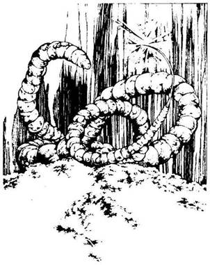
kötelet és kimentsen, adj neki 3 Aranyért. Ha ezt nem tennéd, elfogad bármilyen mágikus tárgyat a hátizsákodból. Miután megegyezel a mérges prémvadásszal, ledobja a kötelet, és kimászol a veremből. Átadod a kért összeget vagy váltságdíjat, aztán végigméred a barátságtalan prémvadászt, és a szurdokban elindulsz ismét északnak. Lapozz a 255-re.
15.
A vájat meredeken lejt lefelé, és a nyálkán végigcsúszva bezuhansz a verem fenekére, ahol egy hatalmas földbe vájt barlang tárul eléd. Ijedtedben felpattansz, amikor észreveszed egy feléd tartó hatalmas Bűzféreg fényesen csillogó, méreggel teli tűhegyes farkát. Bűzféregnek körülbelül öt méter hosszú, sárga, ízelt teste van, de te csak a farkától óvakodsz. Nincs már időd arra, hogy kimássz a veremből - kardot kell rántanod és meg kell küzdened vele.
Bűzféreg Ügyesség 8 Életerő 7
Ha legyőzöd - lapozz a 217-re.
16.
Odakiáltasz a piros kalapos gombák ágyását gondozó három humanoidnak, de ezek most sem hederítnek, csak dolgoznak tovább. Megfogod az egyik gomba kalapját, és letörsz belőle egy darabot, majd eszegetni kezded. Jó íze van, de iszonyú görcs áll a gyomrodba tőle. Ez mérges gomba. Van-e nálad Ellenméreg? Ha van - lapozz a 211-re. Ha nincs ellenmérged - lapozz a 345-re.
17.
A létra levezet a kútba, egészen a víz szintje alá. Közvetlenül a víz szintje fölött egy alagút nyílása látszik. A kerek nyílás körülbelül egy méter átmérőjű. Mit teszel?
Bedobsz egy Aranytallért a kútba, és kívánsz
valamit? Lapozz a 89-re.
Lemész a létrán, és körülnézel az
alagútban? Lapozz a 256-ra.
Visszamész az ösvényhez, és nyugat
felé fordulsz? Lapozz a 238-ra.
18.
Terved sikeres, lázad elmúlik. Kézfejedről szerencsére eltűnnek a szőrök, és fáradtan ismét aludni térsz. Reggel összeszeded a holmidat és elindulsz északnak az ösvényen, a dombok felé. Lapozz a 198-ra.
19.
Bár a láz nagyon legyengített, sikerül felülnöd. Megmarkolod a kardodat, és fogadat összeszorítva belevágsz vele a karodba ott, ahol a Farkas-
ember megsebzett. Sebedből kiserken a vér, s remélhetőleg a betegség is vele együtt távozik a szervezetedből. Vesztesz 1 életerő pontot a vérveszteség miatt. Ha még mindig életben vagy - lapozz a 18-ra.
20.
Az ösvényből, amelyen kelet felé tartasz, néhány út ágazik el délnek, de te úgy döntesz, hogy inkább kelet felé mész tovább. Lapozz a 277-re.
21.
A fájdalom egyre nő, ezért gyorsan belenyúlsz a hátizsákodba és előhúzod az Ellenmérget. Miután megiszod, tested megnyugszik, és a méreg eltávozik belőle. Miközben azon gondolkodol, vajon miféle meglepetésekkel szolgál még ez az erdő, elindulsz az ösvényen északnak. Lapozz a 226-ra.
22.
A felcsapó gáz mérges gáz, és könnyezni kezdesz tőle. Köhögsz, és a lélegzetedet visszatartva körbe-körbe rohangálsz a barlangban, hogy megszabadulj a gáztól, mely elborítja az arcodat. Úgy érzed, szétrobban a tüdőd, de nem tudsz mit tenni,
be kell szívnod a gázt. Vesztesz 2 Ügyesség pontot és annyi Életerő pontot, ahányat egy kockával dobsz. Ha még mindig életben vagy, megkönnyebbülten veszed észre, hogy a gáz eloszlik. Elteszed az ezüstládikót a hátizsákodba, és azonnal elhagyod a barlangot. Észak felé folytatod az utadat. Lapozz a 358-ra.
23.
Letörölöd a homlokodról az izzadságot, és arra gondolsz, vajon milyen meglepetéssel szolgál még ez a gonosz hely. Leülsz pihenni. Kis idő múlva elindulsz a vízcsobogás irányába. Lapozz a 339-re.
24.
Nyakizmaid kezdenek megmerevedni, és érzed, ahogy a nyílvesszők mérge fokozatosan szétáramlik a testedben. Gyorsan lenyúlsz a hátizsákodba, előveszed belőle az Ellenmérget tartalmazó kis üvegcsét, és felhörpinted az italt. Tested megnyugszik, a méreg hatása elmúlik. Amikor ezt a Pigmeusok meglátják, sarkon fordulnak és berohannak a fű közé. Mit teszel?
Kardot rántva utánuk veted
magad? Lapozz a 377-re.
Északnak folytatod az utadat az
ösvényen? Lapozz a 92-re.
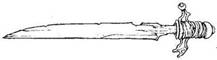
25.
Végül az ösvény ismét sík területen visz tovább és csakhamar egy völgyhöz érsz. Az ösvény északnak vezet tovább, de innen egy újabb út ágazik el nyugat felé.
Ha északnak mész tovább lapozz a 369-re.
Ha nyugat felé mész lapozz az 56-ra.
26.
A keresést a polcoknál kezded. A könyvek egytől-egyig számodra ismeretlen nyelven íródtak, és különös ábrákkal vannak tele. A térképeket és a tekercseket sem vagy képes megérteni. Kinyitogatod a szekrényeket és a fiókokat, de ismét csak porlepte, bőrkötéses könyveket találsz. Már éppen feladod a keresést, amikor egy újabb könyvet veszel észre a földön, amellyel egy törött lábú asztalt támasztottak alá. Mit teszel?
Felveszed a könyvet a földről? Lapozz a 91-re.
Abbahagyod a keresést, és visszatérsz az
ösvényhez, hogy észak felé folytasd az
utadat? Lapozz a 220-ra.
27.
Lerázod kardod pengéjéről a sűrű zöld vért, és ismét északnak fordulsz. Megkönnyebbülten látod, hogy a fák egyre ritkulnak körülötted és már nem olyan ijesztőek. Lapozz a 329-re.
28.
Ha van nálad Erőkarszalag - lapozz az 52-re. Ha nincs - lapozz a 266-ra.
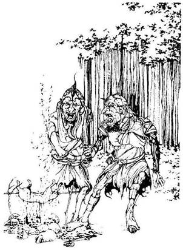
29.
A fák között kitekintve egy kis tisztáson két apró termetű, bibircsókos bőrű, bőrzubbonyos lényt pillantasz meg. Egy nyárson sülő nyúlon veszekednek, hogy kié legyen. Amikor megpillantanak, abbahagyják a vitát és előrántják rövid kardjukat. Meg kell küzdened ezzel a két Orkkal, akik rád támadnak.
Ügyesség Életerő
Első Ork 5 5
Második Ork 5 6
Ha legyőződ őket - lapozz a 383-ra.
Ha harc közben Elmenekülnél, rohanj vissza az ösvényhez, és folytasd az utadat északnak. Lapozz a 254-re.
30.
Vesztesz 2 életerő pontot a fejedet ért mély vágás miatt. Ha még mindig életben vagy - lapozz a 225-re.
31.
Kikúszol az alagútból, és a kút oldalához támasztott létrán kimászol az ösvényre. Lapozz a 362-re.
32.
Belenyúlsz a hátizsákodba, előhúzol belőle 10 Aranytallért meg két tárgyat és átnyújtod Arragonnak. Jelöld a változást a Kalandlapodon! Arragon ekkor megparancsolja, hogy engedjenek szabadon. Miután kiszabadulsz, kirohansz a házból, és visszafutsz az ösvényen az elágazáshoz. Vesztesz 1 szerencse pontot, és észak felé indulsz el az ösvényen. Lapozz a 150-re.
33.
A barát megrázza a fejét és így szól: - Úgy látszik, nincs már a világban könyörület! - Vállat von és továbbmegy délnek. Amikor eltűnik a szemed elől, észak felé folytatod az utadat az ösvényen. Lapozz a 390-re.

34.
Amikor megdörzsölöd a lámpást, zöld füst száll fel lassan a belsejéből. A füst egy öreg, kopasz férfi alakját ölti fel, aki egy párnán ül. Ajka szóra nyílik és mély hangon így szól: - Nos, mit akarsz? - Elmondod, mi járatban vagy errefelé, mire közli veled, hogy ő sem vagyont, sem egyéb anyagi javakat nem tud adni neked. Csak arra képes, hogy visszaadja az erődet. Ügyesség, életerő és szerencse pontjaidat most visszaállíthatod a kezdeti értékre. Abban a pillanatban, amikor megteszed, a dzsinn eltűnik és a lámpás fénye kialszik. Földhöz vágod a lámpást, és északnak indulsz tovább. Lapozz a 231-re.
35.
Vesztesz 4 életerő pontot szörnyű égési sebeid miatt. Ha még mindig életben vagy - lapozz a 132-re.
36.
Amikor a palástot viselő idegenre gondolsz, furcsa érzésed támad. Volt valami különös a viselkedésében, ami bizalmatlanságot ébresztett benned. Megállsz, vizsgálod a hátizsákod tartalmát, és mérgesen veszed észre, hogy valami hiányzik. A férfi tolvaj volt! Húzd ki a Kalandlapodról vagy az összes Aranytallérodat vagy a Yaztromotól kapott két varázstárgyadat. Nem tudod eldönteni, vajon a nyomába eredj-e a tolvajnak, vagy sem, de az az érzésed, hogy úgysem ott lesz, ahol mondta. Káromkodva indulsz tovább ismét észak felé. Lapozz a 187-re.
37.
Felnyúlsz az egyik ághoz és leszakítasz egy körte alakú, bíborszínű gyümölcsöt. Amikor beleharapsz, keserű ízt érzel a szádban. Ha kiköpöd a gyümölcsöt, és észak felé folytatod az ösvényen az utadat - lapozz a 226-ra. Ha lenyeled a gyümölcsöt - lapozz a 336-ra.
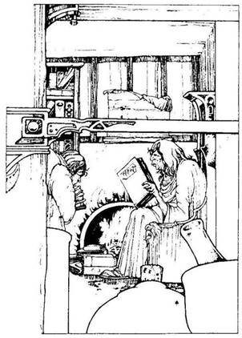
38.
Amikor belesel a kunyhó koszos ablakán, a szoba túlsó végében, a kandalló mellett ülve egy piszkos ruhát viselő ráncos arcú, bibircsókos orrú öregasszonyt pillantasz meg, aki számos könyve közül az egyiket olvassa éppen. Púpos szolgája a könyvekkel, térképekkel, papirusztekercsekkel telezsúfolt polcról újabb halom könyvet cipel oda neki. Ha be akarsz menni a kunyhóba - lapozz a 315-re. Ha inkább visszamész az ösvényhez és folytatod az utadat észak felé - lapozz a 220-ra.
39.
Előhúzod a hálót és meglengeted a fejed felett, majd elhajítod a Barlangi Troll irányába. A háló némán száll el, majd a kiszemelt mozdulatlan célponton landol. Ráborul a Barlangi Trollra, aki azonnal felébred, és hangos morgások közepette próbál meg kiszabadulni a fogságból. Odarohansz a kőszékhez, és leemeled róla a dühös Barlangi Troll bőrzsákját, majd kifutsz a barlangból, és otthagyod a háló fogságából szabadulni igyekvő Trollt. Lapozz a 287-re.

40.
Káromkodva feltápászkodsz és leporolod a ruhádat. Szívesen megvárnád itt azt, aki a csapdát felállította, de végül úgy döntesz, hogy továbbmész északnak - lapozz 274-re.
41.
Visszarohansz az ösvényen az elágazáshoz, ahol a varjú még mindig az útjelző tábla tetején ül. Balra fordulsz és kelet felé futva odakiáltod a varjúnak, hogy "Jó napot!", amikor elrohansz előtte. Lapozz a 239-re.
42.
Az öregasszony hátraveti a fejét és kacagásban tör ki amikor megszólítod. Ez egy gonosz vénasszony. Vesztesz 1 szerencse pontot, és rántsd elő a kardodat. Lapozz a 342-re.
43.
Kardot rántasz, és rátámadsz a Vad Dombi Emberekre, akik abbahagyják a veszekedést, és baltájukat lengetve, hatalmas ordítások közepette indulnak el feléd.
Ügyesség Életerő
Első Vad Dombi Ember 7 5
Második Vad Dombi Ember 6 4
Egyszerre eggyel küzdj meg. Ha te győzöl - lapozz az 50-re. Elmenekülhetsz, ha az ösvényen észak felé futhatsz - lapozz a 188-ra.
44.
Vesztesz 2 életerő pontot. Ha még mindig életben vagy, a hátizsákod oldalzsebében megtalálod az Orrszűrődet, és sietve az orrodba dugod. Lassan
szívod be a mérgezett levegőt. Minden simán megy, és szabadon lélegzel. Egy idő múlva a gáz eloszlik. Mindazonáltal nincs sok értelme tovább itt maradni. Odamész a kút túloldalán lévő lépcsökhöz. Lapozz a 293-ra.
45.
Vesztesz 2 életerő pontot. Ha még mindig életben vagy - lapozz a 165-re.
46.
A sárgarépa elrepül, de mielőtt a Gnómhoz vágódna, lepkévé változik és tovaröppen. A Gnóm unottan farigcsálni kezd egy kis késsel egy fadarabot. Vesztesz 2 Szerencse pontot. Rájössz, hogy kissé nagyobb tisztelettel kellene viseltetned iránta, és bocsánatot kérsz tőle lapozz a 12-re.
47.
Amíg a szolgával vagy elfoglalva, a Boszorkány néhány furcsa szót kiált. Hirtelen egy fényes villanást látsz, és a boszorkány eltűnik, majd apró denevér alakjában ismét megjelenik és kirepül a nyitott ajtón át. Amikor ezt a púpos meglátja, a földre veti magát előtted, és kiabálni kezd. Mit teszel?
Átkutatod a kunyhót, hátha találsz számodra
hasznos dolgot? Lapozz a 26-ra.
Kimész a kunyhóból, és az ösvényen folytatod
az utadat észak felé? Lapozz a 220-ra.
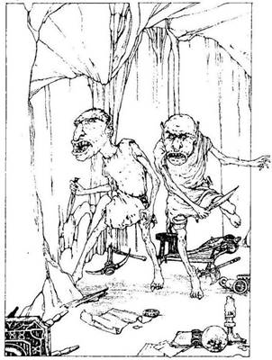
48.
A magasba emeled a ládikót, majd a földhöz vágod. Amint földet ér, nagy csattanással kinyílik, és a széttört fadarabok között egy világoskék színű, közel egy méter kerületű nagy tojást találsz. Megtapogatod: a felülete hideg, sima, olyan, mint a márvány. Hirtelen megreped a tojás burka, és még mielőtt elugorhatnál, hatalmasat robban. Borotvaéles tojáshéjak repülnek szerteszét a levegőbe. Dobj egy kockával, hogy eldöntsd, hány borotvaéles tojáshéjszilánk csapódott a testedbe. Szilánkonként 1 életerő pontot vesztesz. Ha még életben vagy, kibotorkálsz a szobából, és észak felé folytatod az utadat az ösvényen. Lapozz a 288-ra.
49.
Végigmész az alagúton egészen a barlang bejáratáig. A barlang épp olyan magas, mint az alagút, és képtelen vagy benne felállni. Telis-tele van apró bútordarabokkal és egyéb ritka tárgyakkal. A barlang közepén két apró termetű, nagy fejű, zöld teremtmény áll, fülük hegyes, az orruk hosszú és zsákvászonból készült ruha van rajtuk. Izgatottan szegezik neked a tőreiket. Meg kell küzdened ezekkel a Gremlinekkel, hisz nem tudsz visszafordulni és elmenekülni.
Ügyesség Életerő
Első Gremlin 4 3
Második Gremlin 3 2
Egyenként küzdesz meg a Gremlinekkel, de minden Fordulóban le kell vonnod a Támadóerődből 3-at, mert puszta kézzel harcolsz ellenük. Ha legyőzöd őket - lapozz a 371-re.
50.
A Vad Dombi Ember nyakában egy bőrzsinóron ezüst kulcsocska lóg. Kioldod a zsinórt, és elteszed a kulcsot a hátizsákodba. Ismét északnak mész tovább. Lapozz a 188-ra.

51.
A füves völgyben csakhamar egy útelágazáshoz érsz. Ha északnak mész - lapozz a 199-re. Ha kelet felé folytatod az utadat - lapozz a 397-re.
52.
Quin közli veled, hogy egy kevés Lebegtető porba fogad veled valami 10 Aranytallért érő tárgy vagy érme ellenében. Amikor leülsz vele szemben az asztalhoz, gyorsan a karodra húzod az Erőkarszalagot. Könyöködet az asztal lapjához támasztod, és összekulcsoljátok a kezeteket. Markának szorítása olyan, akár a vassatu, és ferde metszésű szemével magabiztosan tekint rád. Megtáncoltatja a bicepszét, majd jelt ad a verseny kezdetére. Nyomni kezded a kezét az asztal lapja felé, és szinte magad is megdöbbensz, hogy milyen erős vagy. Ellenfeled homlokán izzadságcseppek jelennek meg, és fájdalmas képpel, hitetlenkedve néz rád. Ekkor még erősebben kezded nyomni a karját, egészen az asztal lapjáig. Lapozz a 78-ra.
53.
Nyakizmaid kezdenek megmerevedni, és érzed, ahogy a nyílvesszők mérge fokozatosan szétáramlik a testedben. Kihúzod a nyílvesszőket a nyakadból, de már késő. Térdre rogysz, majd eszméletlenül terülsz el a földön. Amikor magadhoz térsz, látod, hogy kardod és értéktárgyaid mind megvannak, de az összes Aranyadnak lába kelt. A Pigmeusok mind elvitték. Megrázod az öklödet az eltűnt tolvajok felé, és tovább folytatod az utadat északnak az ősvényen. Lapozz a 92-re.
54.
Amikor kardot rántasz, Yaztromo lazán azt tanácsolja neked, hogy ne butáskodj, hisz az ő varázsereje igen nagy. Ha még most is rá akarsz támadni - lapozz a 399-re. Ha meggondolod magad és inkább utánamész a csigalépcsőn a toronyba - lapozz a 261-re.
55.
Benyúlsz a hátizsákodba, és előveszel belőle egy bíborszínű selyemkesztyűt. Lehajolsz, fölemelsz a földről egy jókora követ és célzol. Teljes erőből hozzávágod a követ az Ogréhoz. A kő úgy röpül az Ogre felé, akár egy nyílvessző, és pont a fején találja el. Eszméletlenül terül el a földön. A ketrecbe zárt apró teremtmény most még vadabbul kezd


el ugrálni. Mit teszel?
Közelebbről megnézed a ketrecbe zárt
teremtményt? Lapozz a 168-ra.
Átkutatod a barlangot? Lapozz a 313-ra.
Azonnal távozol a barlangból, és észak felé
veszed az utadat? Lapozz a 358-ra.
56.
A nyugodt völgyben ballagsz, amikor egy útelágazáshoz érsz. A déli út visszavezet a dombok közé, s ezért úgy döntesz, nem erre mész. Ha nyugat felé folytatod az utadat - lapozz a 233-ra. Ha észak felé indulsz - lapozz a 163-ra.
57.
Amikor odamész, hogy megvizsgáld az odút, hirtelen egy sötét árnyat pillantasz meg. Föntről hangos üvöltést hallasz, és amikor fölnézel, egy sárkányszerű teremtményt veszel észre. Két lába és zöld, pikkelyes teste van, és épp a fészkére száll le. Hatalmas lángnyelvet lövell feléd a szájából. Tedd próbára a Szerencsédet! Ha szerencséd van, a lángnyelv nem talál el, és a lábad előtt csapódik a földbe - lapozz a 132-re. Ha nincs szerencséd, a hátadba csapódik, és földhöz vág - lapozz a 35-re.
58.
Belenyúlsz a hátizsákodba és előveszel belőle egy kis üveget, melyben Szentelt Víz van. Gyorsan kihúzod a dugót, és a vizet a rád támadó Ghoulra hinted. Sűrű füstfelhő száll fel a Ghoul bűzös testéből, amikor a Szentelt Víz ráömlik. Úgy látod, iszonyú fájdalmakat áll ki a Ghoul, de nyitott száján egyetlen hang sem jön ki. Elkeseredetten menekül kardod elől a szoba sarka felé. Odamész a koporsóhoz és belenézel. Örömöd határtalan, amikor megpillantod a 25 Aranytallér mellett a Ghoul által fejpárnaként használt tárgyat, mely nem más, mint egy bronzból készült kalapácsfej, amelybe egy nagy G betűt véstek. Boldogan teszed el az aranyakkal együtt a hátizsákodba, majd visszamész a lépcsőn, elhagyod a kriptát és az ösvényen észak felé folytatod az utadat. Lapozz a 112-re.

59.
Újabb elágazáshoz érsz az ösvényen. Itt nem délnek mész tovább, hanem keletnek. Lapozz a 171-re.
60.
Lélegzetedet visszatartva belenyúlsz a hátizsákodba, és kétségbeesetten kutatni kezdesz benne az Orrszűrőid után. Tedd próbára a szerencsédet! Ha szerencséd van, rögtön megtalálod őket, és azonnal bedugaszolod velük az orrodat. Lapozz a 183-ra. Ha nincs szerencséd, nem találod meg őket elég gyorsan, és be kell szívnod a mérgező gázt. Lapozz a 44-re.

61.
Nemsokára visszaérsz az első elágazáshoz. Ha déli irányba mászol vissza a kúthoz - lapozz a 398-ra. Ha kelet felé folytatod az utadat - lapozz a 151-re.

62.
Amikor utolsó ellenfeledből kihúzod a kardot, a fehér csődör az ösvényen elvágtat keletnek és eltűnik a szemed elől. Megfordulsz, és ismét nyugat felé mész tovább. Lapozz a 208-ra.
63.
Amikor a Kentaur meglátja, hogy a nyílvessző elszáll melletted, két hátsó lábára ágaskodik, és vágtatva indul feléd. El kell ugranod előle, nehogy eltaposson. Hatalmas porfelhőt kavarva üget el melletted vagy tíz méterre azon az ösvényen, amelyen eddig eljöttél. Lehetséges, hogy nem a jobb ötlet harcba szállni ezzel a nemes Kentaurral? Visszadugod a kardodat a hüvelyébe, és úgy döntesz, hogy átgázolsz a folyón. Lapozz a 178-ra.
64.
Mielőtt a Fojtófű a földre rántana, sikerül előhúznod a hátizsákodból a Növényelleni szert tartalmazó üveget és kiiszod a folyadékot. Mintha a lángok perzselték volna meg, a Fojtófű elereszti a végtagjaidat és visszahúzódik az ösvényről. Úgy döntesz, hogy amíg még az ital ereje hat, gyorsan továbbrohansz az ősvényen. Lapozz a 142-re.

65.
A híd iszonyatosan rozoga, de sikerül átjutnod rajta. Egy domb lábánál állsz, sötétedni kezd, közeledik az éjszaka. Az ösvénytől balra néhány szikla tövében letáborozol, és kardodat magad mellé téve nyugovóra térsz. Lapozz a 330-ra.
66.
A csúszós köveken óvatosan lépkedve átmész a túlpartra. Látod, hogy az ösvény északnak visz a dombok kőzött, de mivel sötétedni kezd, úgy döntesz, hogy az ösvény jobb oldalán egy magányos fa alatt letáborozol éjszakára. Tüzet raksz, és kardodat magad mellé téve aludni térsz. Lapozz a 325-re.
67.
Egy újabb útelágazáshoz érsz az ösvényen. A délfelé vezető út visszavisz a dombokhoz, ezért inkább nyugatnak folytatod az utadat. Lapozz a 113-ra.
68.
Lassan iszod ki az üvegből az átlátszó folyadékot, mely nagyon keserű, és aggódni kezdesz, hogy valami rosszat tettél. Ekkor azonban hirtelen úgy érzed, mintha izzani kezdene a tested, és teljesen felfrissülsz. Az Egészség Italát ittad ki - nyersz 3 életerő pontot. Ismét keletnek mész tovább az ösvényen. Lapozz az 59-re.

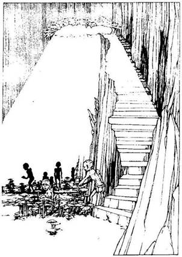
69.
Az alagút egyre mélyebben hatol be a föld alá, és legalább tizenhat méteren át nyugat, felé tart, majd egy zöld nyálkával borított nagy barlanghoz ér. A barlang tetején lévő nyíláson át beszűrődő fény a földre vetül. Apró termetű, sápadt bőrű humanoidok nyüzsögnek mindenütt különböző színű gombákat gondozva. Egy folyó csörgedezik át a barlangon. A túloldali fal mentén, ahonnan kis beugrók nyílnak, egy lépcsősor vezet fel a fönti nyíláshoz; amelyen keresztül a fény beszűrődik. Kardot rántasz, és így közeledsz az apró humanoidok felé. Amikor a közelükbe érsz, akkor látod, hogy ezek a parányi lények teljésen kopaszok és vakok. Egyáltalán nem érdekli őket a jelenléted, ott hajolgatnak a gombaágyások között, hogy megszabadítsák a gombafejeket a rovaroktól és a gyomtól. Mit teszel?
Megtámadod az egyik apró
humanoidot? Lapozz a 264-re.
Kivágod az egyik gombát? Lapozz a 143-ra.
Megkéred őket, hogy megehesd az
egyik zöld kalapos gombát? Lapozz a 269-re.
Megkéred őket, hogy megehesd az
egyik piros kalapos gombát? Lapozz a 16-ra.
70.
Remek kard ez, melyet minden valószínűség szerint híres mester készített. Erőt sugároz, amikor a kezedbe veszed. Adj hozzá 2 pontot jelenlegi ügyesség pontjaidhoz, amiért erre a bűvös kardra rátaláltál. Belesuhintasz vele a levegőbe, majd elindulsz északnak a szurdokban. Lapozz a 334-re.
71.
Amikor elhúzod a függönyt, mögötte egy apró termetű, nagy fejű, zöld bőrű teremtményt pillantasz meg. Hosszú orra, hegyes füle van, és barna zsákvászon ruhát visel. Nyakában egy ezüstláncon nagy medál lóg. Ott ül az asztalnál, és egy piros színű, kezet ábrázoló agyagfigurát szemlél. Amikor észreveszi, hogy belépsz a barlangba, fölemeli a kőkalapácsát és lesújt vele az agyagkézre. Ez egy gremlin főnök, aki most talpra szökken, és kalapácsával rád támad. Meg kell küzdened vele.
Gremlin Ügyesség 5 Életerő 5
Minden fordulóban 3 pontot le kell vonnod a Támadóerődből, mivel nem túl rózsás a helyzeted. Ha legyőzöd - lapozz a 273-ra.
72.
Az ösvény egy útelágazásnál ér véget A déli irányba tartó út visszavezet az erdőbe, s ezért úgy döntesz, hogy észak felé mész tovább.
Lapozz a 138-ra.
73.
Nekifeszülsz az ajtónak. Dobj két kockával. Ha a kapott ősszeg ugyanannyi vagy kevesebb, mint szerencse és ügyesség pontjaid száma, az ajtó kinyílik - lapozz a 327-re. Ha a kapott összeg nagyobb, mint akár ügyesség, akár szerencse pontjaid, az ajtó meg sem moccan, te pedig jól beütöd a válladat. Úgy döntesz, nem kísérletezel tovább, nehogy még jobban megsérülj, és visszamész az ösvényhez, amelyen észak felé folytatod az utadat. Lapozz a 112-re.
74.
Leemeled a bőrzsákot a kőszék támlájáról, és kilopakodsz a barlangból. Amikor már kinn vagy, megvizsgálod a zsák tartalmát. 5 Aranytallért találsz benne, és egy sárgaréz csengettyűt. Szerzeményeidet beteszed a hátizsákodba, és visszamész az elágazáshoz, ahol észak felé indulsz el. Lapozz a 25-re.
75.
A lábad igen gyenge, és úgy érzed, bármelyik pillanatban belemarhat valamilyen láthatatlan folyami teremtmény. De semmi ilyesmi nem történik, és sikerül biztonságban átkelned a folyón. Ott állsz a dombok lábánál, és ahogy az éjszaka közeledik, egyre sötétebb lesz. Úgy döntesz, hogy néhány szikla tövében letáborozol az ösvény bal oldalán, és kardodat magad mellé téve aludni térsz. Lapozz a 330-ra.
76.
Az ösvény hirtelen jobbra kanyarodik, és észak felé visz tovább, be a sűrűbe. Lapozz a 206-ra.
77.
A Pigmeusok gyorsan megfordulnak és berohannak a fűbe. Mit teszel?
Kardot rántasz, és utánuk veted
magad? Lapozz a 377-re.
Északnak folytatod az utadat az ösvény
mentén? Lapozz a 92-re.
78.
Quin feláll, és némán odamegy a kunyhó végében lévő faládához. Fölemeli a láda tetejét és kivesz belőle egy üvegfiolát. Átadja neked, visszamegy az asztalhoz, és csüggedten roskad le a székére. Az üvegfiolában lévő por szikrázik a fényben. A hátizsákodba rejted a fiolát, és távozol a kunyhóból. Visszamész az ösvényen az elágazáshoz. Lapozz a 349-re.
79.
Háttal a fának felkészülsz a Vámpír Denevérek elleni küzdelemre. Egyenként küzdesz meg velük, amikor lecsapnak rád.
Ügyesség Életerő
Első Vámpír Denevér 5 5
Második Vámpír Denevér 6 5
Harmadik Vámpír Denevér 5 7
Ha legyőzöd őket - lapozz a 386-ra.
80.
Nincs értelme tovább itt maradnod. Odamész a barlang túloldalán lévő lépcsőhöz.
Lapozz a 293-ra.
81.
A távolból hallod, amint magas fejhangon valakik egymásnak ordítoznak. Az alagút egy kis barlang bejáratánál ér véget. Hirtelen egy nyílvessző röpül
ki a barlang nyílásán át, és egyenesen feléd tart. Tedd próbára a Szerencsédet! Ha szerencséd van, a nyílvessző elröpül a fejed mellett - lapozz a 49-re. Ha nincs szerencséd, beleáll a válladba - lapozz a 4-re.
82.
Van-e nálad Nyugtatószer? Ha van - lapozz a 235-re. Ha nincs - lapozz a 13-ra.

83.
Benyúlsz a hátizsákodba és előveszed a nadragulyát. Mérgező hatása van ugyan, de legalább megvéd attól, hogy Farkasemberré válj. Vesztesz 2 életerő pontot a mérgező hatás miatt. Ha még mindig életben vagy - lapozz a 139-re.
84.
Ahogy a sziklatömbhöz közelítesz, még inkább meglepődsz, amikor az két zömök kőlábán hirtelen feláll előtted. Ezt követően mindkét oldalából egy-egy bunkósbothoz hasonló ököl pattan ki. Hitetlenkedve szemléled, amint a sziklatömb egyik öklét a magasba emelve elindul feléd. Gyorsan magadhoz
térsz rémületedből, és kardodat előrántva felkészülsz a küzdelemre a Sziklavaddal.
Sziklavad Ügyesség 8 Életerő 11
Ha te győzöl - lapozz a 146-ra.
Három forduló után elmenekülhetsz észak felé futva az ösvényen, a völgy felé. Lapozz a 245-re.

85.
A ketrecben egy aprócska, barna pikkelyes bőrű, inas teremtmény ugrál. Ez egy Goblin, akinek a nyakában egy vékony bőrszíjon egy fekete, fényes pálca lóg. Ha ki akarod nyitni a ketrec zárját. Lapozz a 9-re. Ha nem veszel tudomást a teremtményről, és a barlangból kimenve észak felé folytatod az utadat. Lapozz a 358-ra.
86.
Amikor leguggolsz a magas fűben, kutyaugatást és vágtató paták zaját hallod. Négy vadászkutya lábát látod, és egy lovat, mely melletted vágtat el hatalmas port kavarva. A hajtóvadászat zaja csakhamar elhal, és te ismét kimész az ösvényre. Miközben a szegény öreg róka felett borongsz, folytatod az utadat nyugat felé. Lapozz a 208-ra.
87.
Az ösvény a domb tetején vezet, majd egy újabb elágazáshoz ér. A délnek tartó út visszavisz a folyóhoz, ezért úgy döntesz, hogy északnak folytatod az utadat. Lapozz a 90-re.
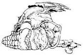
88.
A lépcsőn fölfelé kapaszkodva csakhamar elérsz a második beugróhoz. A sötétben bizonytalan alakokat látsz, és csoszogást hallasz. Ha be akarsz menni a kis beugróba - lapozz a 212-re. Ha továbbmész a lépcsőn - lapozz a 107-re.
89.
Az érme lágy csobbanással ér a vízbe (jelöld a Kalandlapodon). Azt kívánod, hogy még több Aranytallérod legyen, de nem történik semmi - ez nem varázslat. Mit teszel?
Lemászol a létrán, hogy megnézd az
alagutat? Lapozz a 256-ra.
Visszamész az ösvényhez, és ott keletnek
fordulsz? Lapozz a 281-re.
Visszamész az ösvényhez, és ott nyugatnak
fordulsz? Lapozz a 238-ra.
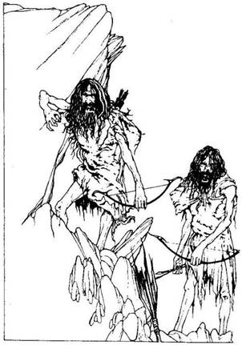
90.
Az ösvény hatalmas kőtömbök, és sziklák között vezet le a dombról. Hirtelen az az érzésed támad, mintha figyelnének. Ekkor az ösvény jobb oldalán az egyik nagyobb sziklatömb mögül két inas, hosszú hajú, szakállas férfi ugrik elő. Testüket állatbőrök fedik, és veszedelmeseknek látszanak. Egyikük az íjába illeszti nyílvesszőjét és kilövi rád. Tedd próbára a Szerencsédet. Ha szerencséd van, a nyílvessző nem talál el és elszáll a fejed fölött. Lapozz a 210-re. Ha nincs szerencséd - a nyílvessző beleáll a karodba, és 3 életerő pontot vesztesz. Ha még mindig életben vagy - lapozz a 348-ra.
91.
Amikor kinyitod a könyvet, meglepetten látod, hogy annak belsejéből hiányoznak a lapok, s helyettük egy kis üregben egy ezüstláncon lógó, apró ékszert találsz. A mellette lévő pergamenen a következőket olvasod:
Borostyánkő Szem
Használati utasítás
Akaszd a láncot a nyakadba,
és tedd fel a kérdéseket annak, akitől félsz:
Bármit akarna mondani neked az illető,
te csakis az igazat fogod hallani.
A nyakadba akasztod a láncot, abban a reményben, hogy jó hasznát veszed majd ebben az elátkozott erdőben. Nyersz 1 Szerencse pontot! Kimész a kunyhóból, és észak felé folytatod az utadat az ösvényen. Lapozz a 220-ra.
92.
Amint észak felé tartasz az ösvényen, a fű egyre rövidebb lesz, és a talaj kissé emelkedni kezd. A távolból vízcsobogást hallasz. A fejed fölül a magasból azonban ennél sokkal nyugtalanítóbb zajra figyelsz fel - valami erős zümmögést hallasz. Hirtelen hatalmas, körülbelül tíz centiméter nagyságú méhek óriási raja tűnik fel és egyenesen feléd tart. Mit teszel?
Megpróbálsz odarohanni a vízhez, és
beleveted magad? Lapozz a 299-re.
Megállsz és megküzdesz
velük? Lapozz a 7-re.
Iszol egy adag Rovarelleni szert
(ha van nálad)? Lapozz a 100-ra.

93.
Az útelágazásnál vagy kelet felé mehetsz - lapozz a 61-re, vagy tovább mehetsz délnek - lapozz a 270-re.
94.
Előveszed a hátizsákodból a Mászókötelet. Mintha csak tudná, mit kell tennie, rácsavarodik a fa törzsére, a lyukon át lekúszik a mély alagútba, és hívogat, hogy mássz le rajta. Ha le akarsz mászni a kötélen - lapozz a 136-ra. Ha meggondolod magad, és visszatérsz az ösvényhez, ahol ismét észak felé indulsz tovább - lapozz a 144-re.
95.
Minden erőddel nekifeszülsz, hogy kimozdítsd a helyéből a kőlapot, de az meg sem moccan. Van-e nálad Lebegtető Por? Ha van - lapozz a 173-ra. Ha nincs - lapozz a 368-ra.
96.
Amikor fölemeled a kardod, hogy lecsapj a kutyára, az dühösen morogva rád támad.
Vadászkutya Ügyesség 7 Életerő 6
Ha legyőzöd a Vadászkutyát, ezt követően meg kell küzdened a másik három kutyával és a gazdájukkal. Párosával harcolj velük. Egy pár mindkét tagja minden fordulóban külön-külön támad rád, és neked kell eldöntened, melyikükkel küzdesz meg először. A kiválasztott ellenféllel küzdj meg a szokásos módon, a másik ellen viszont ugyancsak a szokásos módon dobj Támadóerődért, és ha a te Támadóerőd a nagyobb, akkor nem sebzett meg, tehát vedd úgy, mintha kivédted volna a csapást… Amennyiben azonban az ellenfeled Támadóereje a tiédnél nagyobb, akkor a szokásos módon megsebzett téged.
Ügyesség Életerő
Első pár Vadászkutya 6 6
Vadászkutya 5 6
Második pár Vadászkutya 6 5
Álarcos Férfi 8 7
Ha te győzöl - lapozz a 62-re.
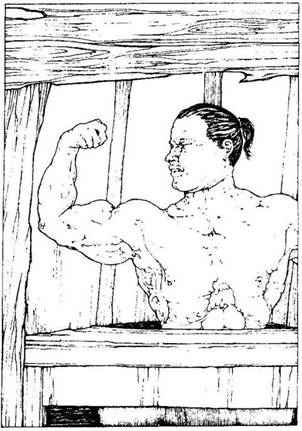
97.
Az ösvény észak felé vezet, de itt legalább a fák már ritkábban nőnek, és a nap sugarai már képesek áthatolni közöttük. Az ösvény jobb oldalán egy öreg, mohalepte tölgyfa széket pillantasz meg. Ha le akarsz ülni a székre, hogy pihenj és egyél - lapozz a 328-ra. Ha inkább továbbmész északnak - lapozz a 118-ra.
98.
A Fekete Erdőt megkerülő hosszú úton Vad Dombi Emberek nagy csapata támad rád. Valószínűleg ugyanazok, akik Nagylábra és az embereire is rátámadtak két napja. Tedd próbára a szerencsédet! Ha szerencséd van, sikerül elmenekülnöd előlük, anélkül hogy nyílzáporuk eltalálna - lapozz az 1-re. Ha nincs szerencséd, megcsúszol futás közben, elesel, és nyílvesszők tömkelege áll beléd. Kalandod itt véget ér.
99.
Az ösvény egy vályogból tapasztott nagy kunyhónál ér véget. Kupolaszerűen kiképzett teteje van és egyetlen ablaka. Belesel az ablakon, és a szoba közepén egy asztal mellett ülve egy robusztus termetű férfit látsz. Felsőteste meztelen, és a muszklijait táncoltatja. Ha be akarsz menni a kunyhóba - lapozz a 209-re. Ha inkább visszatérsz az ösvényen az elágazáshoz - lapozz a 349-re.

100.
Amikor belenyúlsz a hátizsákodba, rémülten jössz rá, hogy a fejed felett zümmögő rovarok gyilkos méhek. Megragadod a Rovarelleni szert tartalmazó üveget és kihörpinted a tartalmát. A Gyilkos Méhek rád támadnak, de hirtelen, mintha valami láthatatlan falba ütköznének, megtorpannak. Ott köröznek hangosan zümmögve körülötted, de nem csípnek meg. Fölbátorodva kardot rántasz, és suhintasz vele egyet a levegőbe. Sikerül egy Gyilkos Méhet lekaszabolnod, mely lezuhan a lábad elé a földre, és bőrszandáloddal eltaposod. Ekkor a többiek tovaröppennek. Észak felé folytatod az utadat, amerről a vízcsobogást hallod. Lapozz a 339-re.
101.
Leemeled a bőrzsákot a kőszékről és kimész. A zsákban 5 Aranytallért és egy kis sárgaréz csengettyűt találsz. Elteszed a szerzeményeidet a hátizsákodba, és visszamész az elágazáshoz, ahol északnak fordulsz - lapozz a 25-re.
102.
Az ösvényen egy kelet felé tartó ló patáinak nyomát fedezed fel. Nemsokára egy újabb útelágazáshoz érsz. A patanyomok innen délnek visznek, be az erdőbe. Úgy döntesz, hogy te észak felé folytatod az utadat. Lapozz a 105-re.
103.
Az ösvényen egy kis tisztáshoz érsz. Jobbra egy halom faágat, füvet és rongydarabokat látsz, amiből valami nagy testű állat odújára következtetsz. A szétdobált hulladék és régi csontok között egy
csillogó tárgyat veszel észre. Ha szeretnéd közelebbről megnézni - lapozz az 57-re. Ha gyorsan elindulsz északnak az ösvényen - lapozz a 360-ra.
104.
A Bandita nő kivont karddal ront rád, és így kiált: - Halál a betolakodóra! - Ő a csapatvezér és meg kell küzdened vele.
Bandita Ügyesség 8 Életerő 6
Ha sikerül legyőznöd, most a többi négy banditával is meg kell vívnod. A párok mindegyik tagja külön-külön támad rád minden fordulóban, és neked kell eldöntened, melyikükkel küzdesz meg. A kiválasztott banditával vívj meg a szokásos módon. A másik ellenében dobókockával állapítsd meg a Támadóerődet, de ha az nagyobb, mint az ellenfeled Támadóereje, akkor vedd úgy, mintha kivédted volna a csapást. Természetesen, ha az ő Támadóereje a nagyobb, akkor ő a szokásos módon megsebzett téged.
Ügyesség Életerő
Első pár Bandita A 7 6
Bandita B 6 4
Második pár Bandita A 7 5
Bandita B 5 6
Ha te győzöl - lapozz a 311-re.

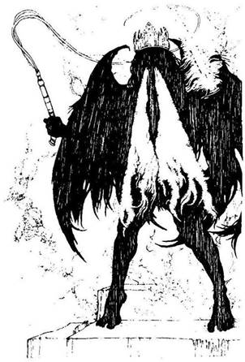
105.
Jobbra tőled, fönt a levegőben nagy madarakat látsz körözni. Amikor közelebb kerülsz hozzájuk, akkor veszed csak észre, hogy ezek keselyűk. Ha le akarsz térni az ösvényről, hogy megnézd, ki vagy mi vonzotta oda a keselyűket - lapozz a 384-re. Ha nem törődsz a keselyűkkel, hanem továbbmész északnak - lapozz a 394-re.

106.
Egy kormos rézkannát találsz a hamuban, és kiveszed. Leemeled a tetejét, és a kanna belsejében egy smaragd díszítésű aranygyűrűt lelsz. A gyűrű 15 Aranytallért ér. Igazán szerencsés vagy, s ezért 2 szerencse pont a jutalmad. Új kincseddel gyarapodva boldogan hagyod el a szobát, és a faládát már meg sem nézed. Észak felé folytatod az utadat - lapozz a 288-ra.
107.
Még mielőtt elérnéd a következő beugróhoz vezető utolsó lépcsőket, a beugróból lángnyelv csap ki, és eltorlaszolja az utadat. Az üregből egy hatalmas, sötét alak lép elő, az ő orrlyukaiból csapnak feléd a
lángnyelvek. Fekete füst kering a légben. A vadállat ember alakú ugyan, de szárnyai vannak, és az egyik kezében lángpallost, a másikban pedig ostort tart. A fején aranykorona van. Mozdulatlanul áll veled szemben a lépcsőkön. Hirtelen pattint egyet az ostorával, és magasba emeli tüzes kardját. Az egyetlen kijárat ebből a barlangból a lépcsők végén lévő nyílás. Csak úgy juthatsz el oda, ha előbb megküzdesz a Tűzdémonnal, a bábuk urával:
Tűzdémon Ügyesség 10 Életerő 10
Tüzes kardján kívül, mellyel a szokott módon támad rád, még minden Fordulóban dobnod kell egy kockával, hogy megállapítsd, mennyi kárt tesz benned az ostorával. Ha 1-et vagy 2-t dobsz, az ostor lecsap rád, és 1 pontot vesztesz életerődből. Ha 3-tól 6-ig dobsz, az ostor nem talál el. Itt megpróbálhatod a szerencsédet is igénybe venni. Ha te győzöl - lapozz a 152-re.
108.
A fájdalom egyre elviselhetetlenebb. Két kézzel átfogod a hasadat, és habzó szájjal térdre rogysz. Végül kissé enyhül a fájdalom, de nagyon legyengültél. Vesztesz 3 Életerő pontot. Azon töröd a fejed, vajon mit tartogat még számodra ez az erdő, és úgy döntesz, hogy továbbmész az ösvényen északnak. Lapozz a 226-ra.
109.
Az ösvény a fák közül csakhamar egy magas fűvel benőtt, nagy réthez ér. A rét mögött a távolban néhány alacsony dombot látsz. Az ösvény itt háromfelé ágazik el.
Ha nyugat felé mész tovább Lapozz a 124-re.
Ha kelet felé mész tovább Lapozz a 72-re.
Ha északnak folytatod az
Utadat Lapozz a 309-re.
110.
Ha át akarod kutatni a Gremlin bőrből készült hátizsákját - lapozz a 257-re. Ha sürgősen elhagyod az alagutat - lapozz a 31-re.
111.
Arragon arcáról eltűnik a bizalom jele és most a félelem váltja fel. Lehet, hogy Arragon nem az, akinek mondja magát? Bocsánatot kér ekkor, amiért ilyen agresszív volt veled szemben, de egyúttal elmondja, hogy ez a vidék tele van banditákkal és gyilkosokkal, s ezért úgy védekezik, hogy hatalmas erejű varázslónak adja ki magát. Bocsánatodért esedezik, és felajánl neked 5 Aranytallért, ha szabadon engeded és senkinek sem árulod el, hogy milyen álruhában van. Elfogadod az ajánlatát, és elhagyod a házát. Visszatérsz az útelágazáshoz, és ott északnak mész tovább. Lapozz a 150-re.

112.
Az ösvény terebélyes fák között vezet észak felé. Kis idő múlva éles kanyart vesz kelet felé. Az ösvényt néhol annyira benőtte az aljnövényzet, hogy a kardoddal kell utat vágnod magadnak. Utad hosszú és fárasztó. Végül egy útelágazáshoz érsz. Megnézed Nagyláb térképét, és úgy döntesz, hogy ismét észak felé mész tovább, Kőhidafalva felé, nem pedig a kelet felé tartó keskeny ösvényen. Lapozz a 103-ra.
113.
Az ösvény hirtelen jobbra kanyarodik és északnak tart a völgyben. Az ösvénytől jobbra egy nagy tavat látsz, melynek szélén egy szalmatetős kis faház áll. Ha meg akarod nézni a házikót - lapozz a 324-re. Ha nem törődsz a házzal, hanem inkább továbbmész az ösvényen északnak - lapozz a 149-re.
114.
A Faember lassan odacammog hozzád hatalmas, szétálló gyökérlábán. Ha van nálad Tűzkapszula - lapozz a 350-re. Ha nincs nálad ilyen kapszula, ránts kardot, és lapozz a 123-ra.
115.
Az ösvény csakhamar egy útelágazásba torkollik. Ha nyugat felé mész tovább - lapozz a 382-re. Ha kelet felé folytatod az utadat - lapozz a 277-re.
116.
Végül is sikerül ismét elaludnod, de korán felébredsz. A hajnali fényben a legnagyobb Farkas nyakában egy aranyveretes bőr nyakörvet veszel észre. Legalább 15 Aranytallért érhet. Miközben elteszed a nyakörvet a hátizsákodba, azon töröd a fejedet, vajon ki lehet ennek a Farkasnak a gazdája. Összeszedelőzködsz, és az ösvényen elindulsz észak felé. Lapozz a 314-re.
117.
Kinyitod az ajtó zárját, és arra számítva, hogy talán a Goblin rád akarna támadni, kivont karddal kissé hátralépsz. A Goblin felkap egy zsámolyt, amelyet a levegőben lóbál. Kirúgja az ajtót, és ordítva rád támad. Még kell vele küzdened.
Goblin Ügyesség 5 Életerő 4
Ha legyőzöd - lapozz a 232-re.

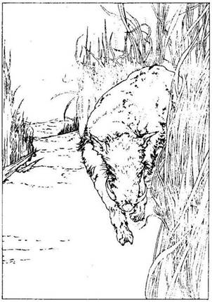
118.
Az ösvény egy tágas tisztáshoz vezet, amely mögött dombok emelkednek. A derékig érő fű, mely kétoldalt az ösvényt szegélyezi, lágyan ring a szélben. Minden oly nyugodt körülötted, hogy szinte elfelejted a rád leselkedő veszélyt. Vidáman mész, amikor az ösvénytől jobbra hirtelen visítást, morgást hallasz. A magas füvön egy számodra láthatatlan vadállat hatol át, és egyenesen feléd tart. Kivont karddal várod. Néhány méterre tőled egy hatalmas, disznószerű lény ront ki az ösvényre és megtorpan előtted. Két hatalmas agyar áll ki tömpe orrából. Izzadt testéből pára száll fel. Apró szemét rád mereszti, majd döfésre készen lehajtja a fejét. Meg kell küzdened ezzel a Vadkannal!
Vadkan Ügyesség 6 Életerő 5
Ha legyőzöd - lapozz a 174-re.

119.
Az ösvény meredeken kanyarog a dombok között. Mire felérsz a tetőre, tűzforrón süt a nap. Körös-körül a Fekete Erdő zöld szegélye övez. Köd lebeg mögötted a magas fű fölött, de a távolban már
feltűnik előtted a napsütötte völgy. Minden nyugodt körülötted. Amikor kezdesz leereszkedni, a domb túloldalán egy útelágazást látsz. Ha északnak folytatod az utadat - lapozz a 90-re. Ha nyugat felé indulsz el, az új elágazáson - lapozz a 216-ra.
120.
Ledobod a követ a fa üregének alján lévő alagútba, mely vagy öt méter mélyen húzódik. Van-e nálad Mászókötél? Ha van - lapozz a 94-re. Ha nincs - lapozz a 380-ra.
121.
Az útelágazástól mehetsz kelet felé - lapozz a 61-re, vagy fordulhatsz északnak - lapozz a 81-re.
122.
A létra tövében észreveszed, hogy az alagút egy jókora darabon észak felé tart. Meglepetten látod, hogy az alagutat egymástól egyenlő távolságban elhelyezett fáklyák világítják meg. Ha négykézláb végigmászol az alagúton - lapozz a 135-re. Ha visszamászol a létrán, és visszamész az ösvényre - lapozz a 362-re.
123.
A Faember meglendíti feléd két legvastagabb ágát, és te is felkészülsz a támadásra.
Faember Ügyesség 8 Életerő 8
Kétszer kell legyőznöd a Faembert - egyenként a két legvastagabb ágát, és csak akkor pusztul el. Ha legyőzöd - lapozz a 27-re. Harc közben
Elmenekülhetsz, ha akarsz: fuss vissza az ösvényen lévő útelágazáshoz. Lapozz a 234-re.
124.
Az ösvény egy újabb útelágazásba torkollik. A déli irányba tartó út visszavezet az erdőbe, s ezért úgy döntesz, hogy észak felé mész tovább. Lapozz a 180-ra.
125.
Amikor leereszkedsz a verembe, annak mélyén óriási mennyiségű nyálkaszerűséget találsz, mely valami hatalmas teremtménytől származott. Ha ki akarsz mászni a veremből, és tovább folytatod az utadat az ösvényen északnak - lapozz a 337-re. Ha inkább még mélyebben behatolsz a verembe - lapozz a 15-re.
126.
Óvatosan felfeszíted a ládikó fedelét, és ekkor sárga gáz csap az arcodba. Ha van nálad Orrszűrő - lapozz a 365-re. Ha nincs - lapozz a 22-re.
127.
Felmászol a Kentaur hátára, aki megfordul, és elindul veled a folyón át. A víz sötétzöld színű, és arra gondolsz, vajon miféle lények lakhatnak a mélyén. Csakhamar átértek a túlpartra, és 3 Aranytallért fizetsz a Kentaurnak. Megköszöni a pénzt, és sok szerencsét kívánva, integetve búcsúzik el tőled. Dombok tövében állsz, és épp sötétedni kezd. Az ösvény észak felé kanyarogva vezet fel a dombok tetejére. Úgy döntesz, hogy egy hatalmas, öreg tölgyfa tövében letáborozol az ösvény jobb oldalán, és kardodat magad mellé téve lefekszel aludni. Lapozz a 298-ra.
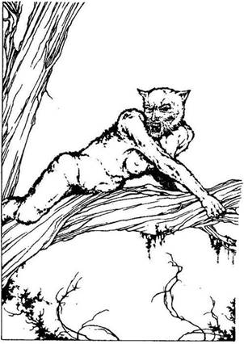
128.
Átvágod a Barbárt tartó vastag köteleket. Morogva ül fel, és megdörzsöli a csuklóját és a bokáját. Gúnyosan mosolyogva néz rád. Vagy nincs egészen magánál, vagy hálátlan, ugyanis kirántja a földből az egyik fapóznát, és azzal támad rád.
Barbár Ügyesség 9 Életerő 7
Ha legyőzöd - lapozz a 272-re.
129.
Karod rettenetesen fáj az erőfeszítéstől, és Quinnek lefizetett aranyaid hiánya teljesen elkeserít. Vesztesz 2 szerencse pontot. Kimész a kunyhóból, és otthagyod a mosolygó Quint. Kint az ösvényen visszatérsz az elágazáshoz. Lapozz a 349-re.
130.
Bütykös fák és tüskés bokrok között kanyarog az ösvény. Morgást hallasz a magasból, és amikor felnézel, egy félig macska, félig nő testű teremtményt pillantasz meg az ösvény feletti faágon heverészni. Párduchoz hasonló rövid, fényes szőr fedi a testét, és éles karmok szegélyezik mindkét karját és lábát. Ferde metszésű szemek és hosszú fogak díszítik emberszabású arcát. Úgy látod, épp lecsapni készül rád. Ha kardot rántasz, és megküzdesz ezzel a Macskanővel - lapozz a 153-ra. Ha gyorsan továbbrohansz az ösvényen, vesztesz 1 szerencse pontot. Lapozz a 355-re.
131.
A folyó túlpartján kimászol a vízből. Látod, hogy az ösvény innen északnak tart a dombok közé, de mivel sötétedni kezd, úgy döntesz, hogy az ösvény jobb oldalán egy nagy magányos fa alatt letáborozol. Tüzet raksz, majd kardodat magad mellé téve aludni térsz. Lapozz a 325-re.
132.
A lény, mely előtted landol, egy Sárkány. Rád néz, és kinyitja hatalmas száját, hogy újabb lángoló bömbölést eresszen ki rajta. A Sárkány legalább tíz méter hosszú, és úgy látod, vastag pikkelyeit nem tudod átvágni a kardoddal. Van nálad furulya? Ha van - lapozz a 258-ra. Ha nincs - lapozz a 167-re.
133.
Amint felhúzod az ujjadra a gyűrűt, iszonyatos fájdalom hasít beléd. A fájdalom csakhamar elmúlik, de a gyűrűt képtelen vagy lehúzni a kezedről. A Lomhaság Gyűrűjét viseled a kezeden, s ezért mostantól kezdve minden alkalommal, amikor dobókockával kell megállapítanod a Támadóerődet, a kapott pontszámból 2-t le kell vonnod a harc időtartamára. Jelöld ezt a Kalandlapodon! Ha fel akarod próbálni a páncélkesztyűt - lapozz a 374-re. Ha nem akarod felpróbálni vagy már felpróbáltad, ismét északnak kell folytatnod az utadat az ösvényen. Lapozz a 360-ra.
134.
Kívánsz valamit, de nem történik semmi. Vesztesz 1 Szerencse pontot! Ha egy kis meleg iszappal bekenegeted a sebeidet - lapozz a 283-ra. Ha inkább északnak indulsz tovább az ösvényen - lapozz a 303-ra.
135.
Az alagút észak felé tart, majd egy útelágazásba torkollik. Ha nyugat felé mászol tovább - lapozz a 284-re. Ha kelet felé - lapozz a 151-re.
136.
Lemászol a kőtélen az alagútba. Lassan megbarátkozik a szemed a sötétséggel, és akkor látod, hogy az alagút alig egy méter magas. Csak négykézláb mászva vagy képes előrehaladni benne. Lapozz a 69-re.
137.
Ha van Hajítókesztyűd - lapozz az 55-re. Ha nincs lapozz a 10-re.

138.
Ott mész a derékig érő fűben, és nézed, mint hullámzik körülötted a zöld fűtenger. Csakhamar az a kellemetlen érzésed támad, mintha a fű a széltől
függetlenül mozogna körülötted. Hirtelen egy nagy fűcsomó nyúlik át az ösvényen, és a bokád köré tekeredik. Néhány fűcsomó a karodat és a lábadat próbálja meg gúzsba kötni. Gyorsan rájössz, hogy a Fojtófű fogságába kerültél. Ha van nálad Növényelleni szer - lapozz a 64-re. Ha nincs - lapozz a 159-re.
139.
Lassan-lassan elmúlik a belladonna hatása, és a Farkasember harapását is alig érzed már, s végre sikerül elaludnod. Reggel összeszeded a holmidat, és elindulsz az ösvényén észak felé, a dombok irányába. Lapozz a 198-ra.

140.
Megkerülöd az Óriáspók összezsugorodott tetemét, és idegesen álomra hajtod a fejedet. Kora reggel ébredsz, és északnak indulsz tovább az ösvényen, mely kanyarogva vezet fel a dombok tetejére. Mire felérsz a tetőre, már melegen süt a nap. Körülötted, ameddig a szemed ellát, a Fekete Erdő sötét gyűrűjét látod. Mögötted még köd lepi a magas füvet, de előtted felbukkan a napsütötte völgy. Minden csendes. A domb túloldalán, amikor leereszkedsz, egy útkereszteződéshez érsz. Mit teszel?
Északnak mész tovább a domb
tövében? Lapozz a 25-re.
Kelet felé indulsz el az új
ösvényen? Lapozz a 267-re.

141.
Megkérdezed a Törpét, vajon nem Kőhidafalváról való-e. Mogorván rád néz, majd baltáját megragadva felpattan. Közli veled, hogy utálja a kőhidafalvai törpéket, és hogy itt, a Fekete Erdőben Gillibran harci pörölyét keresi, amit szeretne visszavinni falujába, Pocsolyavízbe, mely innen nyugatra van. Elmondja még, hogy a neve Trumble, és hogy elvesztette kedvenc sasát, miközben Gillibran harci pörölyét igyekezett megszerezni. Rájössz, hogy Kőhidafalva ellenségével beszélsz. Vesztesz 1 szerencse pontot. Ha meg akarod támadni Trumblét - lapozz a 347-re. Ha azt mondod neki, hogy nem tudsz rajta segíteni, elbúcsúzol tőle, és továbbmész az ösvényen kelet felé - lapozz az 59-re.
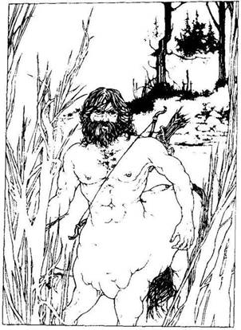
142.
Az ösvény észak fele visz, ahol a fű már egyre rövidebb, és a talaj kissé emelkedni kezd. A távolból vízzubogást hallasz. Hamarosan egy lágyan hömpölygő folyó partjára érsz. Híd nincs a folyón, de látod, hogy a túlparton az ösvény tovább folytatódik. Egy pompás, büszke tartású vad jelenik meg, egy félig ember, félig ló teremtmény. Hátán átvetve íjat visel, és egy tegezben nyílvesszőket. Ez egy Kentaur. Mit teszel?
Ha beszélgetni akarsz vele Lapozz a 366-ra.
Ha megkerülöd és beveted magad
a folyóba Lapozz a 178-ra.
Ha kardot rántasz, és
Megtámadod Lapozz a 251-re.
143.
Kardoddal lekaszabolod az egyik közel egyméteres gombát, melybe úgy hatol be a kardod, akár a kés a vajba. A félszálló spórafelhőtől alig kapsz levegőt. Köhögsz, köpködsz. Vesztesz 2 Életerő pontot. Ha még mindig életben vagy - lapozz a 80-ra.
144.
Amint a völgyben mész, ismét feltűnik előtted a Fekete Erdő sötét szegélye. Az ösvény bevezet a sűrűbe, és csakhamar már a magas fák és tüskés bokrok rengetegében haladsz. Sötét van és nagy-nagy nyugalom. Az ösvény nemsokára egy útelágazásba torkollik. Ha nyugat felé mész tovább lapozz a 213-ra. Ha kelet felé mész - lapozz a 387-re.
145.
Elkötöd a csónakot és elindulsz vele a túlsó part felé. Körülbelül félúton lehetsz, amikor észreveszed, hogy a csónak feneke kezd megtelni vízzel. A csónak, mely teljesen korhadt, száz helyen ereszt, és süllyedni kezd. Összeszeded a holmidat, és úszva vágsz neki a túlpartnak. Amikor kimászol a vízből, rémülten látod, hogy a hátizsákodban lévő összes maradék Élelmed (amennyiben egyáltalán volt benne) tönkrement. Sötétedni kezd. Mivel az éjszaka rohamosan közeledik, úgy döntesz, hogy az ösvény jobb oldalán egy szikla mögött letáborozol. Tüzet raksz, és kardodat magad mellé téve lefekszel aludni. Lapozz a 285-re
146.
Lenézel a lábad előtt heverő szétzúzott sziklatömbre, és közben azon töprengsz, vajon miképp lehetséges az, hogy egy ilyen förtelmes valami egyáltalán élőlény lehet. Csakis úgy, hogy valami gonosz erő helytelenül használta fel az erejét. Hogy mi az igazság, azt soha nem fogod kideríteni. Ha el akarod tenni a Sziklavad egy megmaradt darabkáját, hogy később majd megvizsgálhasd - jegyezd fel azt a Kalandlapodon. Most visszamész az ösvényhez, ahol észak-félé indulsz el a völgy irányába. Lapozz a 245-re.
147.
Az ösvény észak felé vezet be a sűrű erdőbe. Jobbra, az egyik tisztáson egy kunyhó kéményéből füstöt látsz felszállni a fák között. Ha be akarsz nézni a kunyhó ablakán - lapozz a 38-ra. Ha inkább folytatod az utadat észak felé - lapozz a 220-ra.
148.
Az ösvény északnak tart, és csakhamar egy újabb útelágazáshoz érsz. Ha észak felé mész tovább - lapozz a 97-re. Ha keletnek folytatod az utadat - lapozz a 20-ra.
149.
Ahogy mész a völgyön át, feltűnik előtted a Fekete Erdő sötét szegélye. Az ösvény egyenesen a sűrű aljnövényzetbe vezet, és csakhamar magas, sötét fák és tüskés bokrok között haladsz. Sötét van, és nagy-nagy csönd. Az ösvény hirtelen kétfelé ágazik. Ha kelet felé akarsz menni - lapozz a 130-ra. Ha inkább észak felé mész tovább - lapozz a 306-ra.
150.
Észak felé tartasz a völgyön át, amikor feltűnik előtted a Fekete Erdő sötét szegélye. Az ösvény egyenesen a sűrű aljnövényzetbe vezet, és csakhamar magas, sötét fák és tüskés bokrok között haladsz. Sötét van és nagy-nagy csönd, és az ösvény ekkor hirtelen kétfelé ágazik. Ha nyugat felé akarsz menni - lapozz a 357-re. Ha kelet felé akarsz menni - lapozz a 171-re.
151.
Az alagút egy barlang szájánál ér véget. Egy függöny takarja el előled a barlang belsejét. Ha elhúzod a függönyt, és bemész a barlangba - lapozz a 71-re. Ha inkább megfordulsz, és visszatérsz az alagútban lévő elágazáshoz - lapozz a 296-ra.
152.
A fekete Tűzdémon önnön tüzének martalékává válik. Odalépsz hozzá és felkapod a földről összeégett koronáját. A Démon odúja hideg, nyirkos. Bent egy csodálatos trónust látsz, mely előtt kér Harcos Bábu négykézláb áll leborulva előtted. Istenként imádnak. Legyőzted urukat. Mit teszel?
Felteszed a koronát a fejedre? Lapozz a 333-ra.
Ráülsz a trónra? Lapozz az 5-re.
Átléped a Tűzdémon tetemét, és felmész a
tetőnyíláshoz? Lapozz a 249-re.
153.
A Macskanő morog, és a fogát vicsorítja, miközben leugrik a fáról, és rád támad. Ellépsz előle, és felkészülsz a támadásra.
Macskanő Ügyesség 8 Életerő 5
Ha legyőzöd - lapozz a 202-re. Ha akarsz, elmenekülhetsz fuss kelet felé az ösvényen - lapozz a 355-re.
154.
Talpra állsz és észreveszed, hogy a lámpás ismét elsötétült. Úgy döntesz, hogy nem foglalkozol többet vele, és továbbmész az ösvényen északnak. Lapozz a 231-re.
155.
Visszafekszel aludni, de a tested remegni kezd. Annak ellenére, hogy fázol, kiver a veríték. Van-e nálad belladonna? Ha van - lapozz a 83-ra. Ha nincs - lapozz a 259-re.
156.
A földre zuhanás kezd rossz szokásoddá válni! Meg aztán fájdalmas is! Vesztesz 3 Életerő pontot a sebesüléseid miatt. Ha még mindig életben vagy, felkelsz, és továbbmész északnak az ösvényen. Lapozz a 109-re.
157.
Az ösvénytől balra egy körülbelül három méter átmérőjű lyukat látsz a földben. Odamész a széléhez és lenézel a mélybe. Ha be akarsz mászni ebbe a mély gödörbe - lapozz a 125-re.
Ha inkább továbbmész észak felé az ősvényen - lapozz a 337-re.
158.
Az öregasszony varázslata hatására erősen szédülsz, és kezded elveszíteni az eszméletedet. Becsukod a szemedet, a hátizsákodból előhúzod a Koncentrálást elősegítő fejpántodat, és sietve a fejedre teszed. Szédülésed elmúlik, és amikor ismét kinyitod a szemed, akkor látod csak, hogy az öregasszony nem más, mint egy Boszorkány. A szolga egy széket vág hozzád, hogy megakadályozzon abban, hogy az öregasszonyhoz nyúlj. Tedd próbára a szerencsédet! Ha szerencséd van, a szék nem talál el - lapozz a 47-re. Ha nincs szerencséd, a szék eltalálja a fejedet, és elveszted az eszméletedet - lapozz a 353-ra.
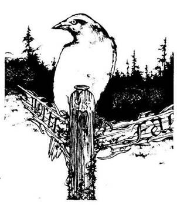
159.
Minden igyekezeted hiábavaló, a Fojtófű a végtagjaid köré tekeredik, és a földre ránt. A fű a nyakad köré csavarodik, és egyre szorosabban fog. Fuldokolva próbálsz meg köhögni. Ekkor észreveszed, hogy a Fojtófű egyáltalán nem akar megfojtani, csupán közel akar kerülni a húsodhoz, hogy kiszívja a véredet! Rémülten pillantasz a karodon és a lábadon lévő száz és száz apró, vérző pontra. Végül, miután eleget ivott a véredből, a fű elereszt. Vesztesz 3 Életerő pontot! Ha még mindig életben vagy, feltápászkodsz, és remegve tapogatod végig sebeidet. Örülsz, hogy életben vagy, és folytatod az utadat északnak. Lapozz a 142-re.

160.
A keskeny ösvény az erdő sűrűjében vezet tovább. Különös állatok rikoltozása visszhangzik a fák között. Az ösvény csakhamar kiszélesedik, és egy mohalepte útjelző táblához érsz, amelynek a tetején egy nagy varjú ül. Az útjelző tábla két karja Észak és Kelet felé mutat. Épp akkor, amikor eldöntöd, hogy merre menj tovább, egy hang így szól: - Jó napot. - Felnézel oda, ahonnan a hangot hallottad, és a varjút látod, mely kérdőn tekint le, rád. - Jó napot... - mondod lassan, miközben
igencsak furán érzed magad. A varjú ismét megszólal, és megkérdi, merre tartasz: Elmondod neki, hogy két apró termetű, barna, rücskös bőrű goblint keresel. - 1 Aranyért megmondom, mit tegyél! - jelenti ki a varjú szemtelen hangon. Mit teszel?
Fizetsz a varjúnak a tanácsáért? Lapozz a 343-ra.
Fittyet hánysz a varjúra, és észak felé mész
tovább? Lapozz a 8-ra.
Fittyet hánysz a varjúra, és kelet felé mész
tovább? Lapozz a 239-re.
161.
Amikor benyúlsz a sötét vázába, fájdalom hasít a kezedbe. Először úgy érzed, mintha eltörött volna, majd pedig mintha tűzbe nyúltál volna. Ha ki akarod húzni a kezedet a vázából - lapozz a 185-re. Ha belülről körbetapogatod a váza oldalát - lapozz a 341-re.

162.
Semmiféle hasznos dolgot nem találsz a Halember barlangjában, s így körbemész az északi falhoz. A lépcsőkön visszajutsz a vízesésen át, az északi fal
mentén a tetőre. Valamiféle dombok lábánál állsz, ahonnan néhány ösvény vezet fel a dombok közé északra. Egyre jobban besötétedik, ahogy az éjszaka közeleg, és úgy döntesz, hogy néhány szikla tövében letáborozol. Tüzet raksz, és kardodat magad mellé téve aludni térsz. Lapozz a 285-re.
163.
Bár a nap ragyogóan süt, az égen egy aprócska szürke felhő jelenik meg. Elég alacsonyan lóg a fejed felett, és egyenesen feléd tart, s ráadásul elég gyorsan. Végül már a földtől mintegy öt méterre van csak. Hirtelen villám csap ki a felhő mögül, és egyenesen a válladba hasít. Vesztesz 3 életerő pontot. Ha még mindig életben vagy, látod, amint a felhő fürgén elkúszik nyugat felé. Valahogy összeszeded magad, és továbbmész észak felé. Lapozz a 375-re.
164.
Felmész a lépcsőkön, és máris kinn vagy a barlangból. Ott állsz az üde zöld fűvel borított völgyben. Tőled keletre egy üreges fatörzset látsz, melybe korábban már bemásztál. Elmész mellette, és visszatérsz az ösvényre, ahol ismét északnak indulsz el. Lapozz a 144-re.
165.
Az apró Gremlin igen fürge, és ott rohangál körülötted, míg te négykézláb alig tudsz mászni. Hátadat a falnak támasztva kardot rántasz.
Gremlin Ügyesség 5 Életerő 3
Mindegyik Fordulóban 3 pontot le kell vonnod a Támadóérődből, amiért ilyen görnyedt testhelyzetben kell harcolnod. Ha te győzöl - lapozz a 242-re.

166.
A barát mosolyogva így szól: - Isten áldjon - és fütyörészve indul el az ösvényen délre. Nyersz 2 szerencse pontot, és indulj el észak felé. Lapozz a 390-re.

167.
A Sárkány ide-oda csapkod hosszú farkával, és hatalmas füstfelhőt ereget az orrlyukaiból. Kardot rántasz, és megpróbálsz megküzdeni ezzel a félelmetes szörnnyel.
Sárkány Ügyesség 10 Életerő 11
Ha legyőzöd - lapozz a 305-re.
168.
A ketrecben egy apró termetű, barna, pikkelyes bőrű teremtmény ugrándozik le s föl: egy GOBLIN. A nyakában egy bőrszíjon fényes, fekete pálca lóg. Ha ki akarod nyitni a ketrec ajtaját - lapozz a 117-re. Ha kimész a barlangból, és észak felé folytatod az utadat - lapozz a 358-ra.
169.
Mérges gáz száll fel, amelytől könnyezni kezdesz. Köhögve, fuldokolva próbálsz meg kimenekülni a barlangból. A mindent elborító gázfelhő szinte égeti a tüdődet, de nem tudsz mit tenni, be kell lélegezned a gázt. Vesztesz 2 Ügyesség és annyi Életerő pontot, ahányat egy kockával dobsz. Ha még mindig életben vagy, a gázfelhő eloszlik. Elteszed az ezüstdobozt a hátizsákodba. Ha oda akarsz menni a ketrecbe zárt lényhez - lapozz a 85-re. Ha inkább a barlangból és észak felé folytatod az utadat - lapozz a 358-ra.
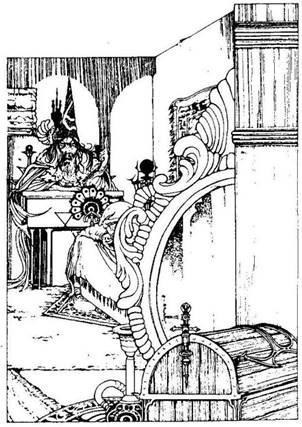
170.
Gyönyörűen berendezett, csodálatos tárgyakkal és gyapjúszőnyegekkel díszített szobába lépsz be. A szoba túlsó végében egy íróasztalnál egy bíborköntöst és süveges sapkát viselő öregember ül. Feláll a székéről és így szól hozzád: - Én Arragon vagyok, te pedig egy jelentéktelen halandó. Hogy volt bátorságod hozzá, hogy hívatlanul behatolj a házamba? Bizonyára azért tetted, hogy kirabolj, hogy megfossz összes vagyonomtól és kincseimtől. Tévedsz, idegen, én foglak téged a vagyonodtól megszabadítani! Ha nem adsz nekem 10 Aranytallért és két tárgyat a hátizsákodból, amivel kitűnő gyűjteményemet gazdagabbá tehetem, kővé változtatlak! Van-e a nyakadban Borostyánkő Szem? Ha van - lapozz a 223-ra. Ha nincs - lapozz a 346-ra.
171.
Egy újabb útkereszteződéshez érsz. A déli irányba tartó út visszavezet a völgybe, s ezért úgy döntesz, hogy az erdőben mész tovább észak felé. Lapozz a 190-re.
172.
A létra mélyen benyúlik a kútba a víz szintje alá. Közvetlenül a víz szintje fölött a kút oldalából egy alagút vezet észak felé. Körülbelül egy méter átmérőjű kerek lyuk ez. Mit teszel?
Bedobsz egy Aranytallért a kútba, és kívánsz
valamit? Lapozz a 89-re.
Lemászol a létrán, és körülnézel az
alagútban? Lapozz a 256-ra.
Visszamész az ösvényhez, és keletnek indulsz
el rajta? Lapozz a 281-re.
173.
Hátizsákodból előveszed a szikrázó porral teli üvegfiolát, és tartalmát rászóród a kőlapra, mely lassan felemelkedik a levegőbe. Belenézel a dobozba, és rémülten látod, hogy egy holttest fekszik benne. Rongyos ruha fedi csontvázáról lecsüngő húscafatjait. Egy átokkal sújtott élőholt teremtmény koporsóját nyitottad fel, és amikor a lény szeme kinyílik, rémülten ugrasz hátra. A sötétség egyik ismeretlen hívének undorító kriptájában vagy. A teremtmény lassan kilép a koporsóból, és széttárt karokkal elindul feléd. Van-e nálad Szentelt Víz? Ha van - lapozz az 58-ra. Ha nincs - lapozz a 227-re.
174.
Amikor kardodat kihúzod a Vadkan testéből, azon tűnődsz, vajon mi késztette őt arra, hogy rád támadjon. A távolból kutyaugatást hallasz. Lehet, hogy vadásztak rá, és mivel csapdába került, te voltál az, aki útját álltad, és ezért támadt rád. A
Vadkan orrában egy nagy aranygyűrű van, melyet kilazítasz, és elteszel a hátizsákodba. 10 Aranytallért ér. Nyersz 1 Szerencse pontot, lapozz a 323-ra.
175.
A ládán lévő vaslakat öreg, rozsdás és nem nyílik ki. Ha megpróbálod fölemelni a ládát és a földhöz vágva széttörni - lapozz a 372-re. Ha inkább otthagyod, és a tűzhelyet vizsgálod meg helyette - lapozz a 106-ra.
176.
Lehajolsz az őrült Goblin élettelen testéhez, és megnézed a nyakában lógó pálcát. A pálca ébenfából készült, és az egyik végén egy csavarmenetet látsz. Örömmel fedezed fel a pálca túloldalán a gondosan belevésett G betűt, melyből arra következtetsz, hogy az csakis a törpék harci pörölyének nyele lehet. Új szerzeményedet beteszed a hátizsákodba; és elhagyod a barlangot. Észak felé folytatod az utadat - lapozz a 358-ra.
177.
Kint a csillogó napfényben ismét halotti csönd vesz körül. A Yaztromo tornyát körülvevő magas fű között egy keskeny ösvény vezet észak felé, be a Fekete Erdő sűrűjébe. Csakhamar bent jársz már a sötét erdőben; úgy érzed, mintha az árnyékban megbújó kövek és tekervényes gyökerek csak téged akarnának elgáncsolni. A fény egyre csökken, és a levegő nyirkossá, kellemetlenné válik. Egyre mélyebbre hatolsz be a sötét erdőbe, míg egy fához érsz, melynél az ösvény, amelyen eddig jöttél, kétfelé ágazik.
Ha nyugat felé mész tovább Lapozz a 289-re.
Ha kelet felé mész tovább Lapozz a 160-ra.

178.
Amikor beveted magad a vízbe, a Kentaur elvágtat az ösvényen délre. A víz sötétzöld, és arra gondolsz, vajon lakik-e a mélyén bármilyen élőlény. Bár a víz csak a derekadig ér, rettenetesen hideg, és majd lefagy a lábad. Úgy érzed, mintha valami hozzáérne a lábadhoz, de nem tudod megállapítani, mi az. Végül átérsz a túlpartra, és kimászol a folyóból. Amikor ránézel a lábadra, rémülten látod, hogy egy hatalmas, legalább fél méter hosszú,
dagadt Pióca tapadt a combodhoz. A hátizsákodból sót veszel elő és bedörzsölöd vele az undorító Piócát. A sótól összetekeredik és lepottyan a földre. Elvesztetted 1 adag Élelmedet. Visszarúgod az összezsugorodott Piócát a folyóba, és körülnézel. Egy domb tövében állsz, amikor kissé sötétedni kezd. Az ösvény kanyarogva vezet fel északra, a dombok közé, és úgy döntesz, hogy az út jobb oldalán egy öreg tölgy tövében táborozol le. Kardodat magad mellé teszed, és lefekszel aludni. Lapozz a 298-ra.
179.
A fejedre teszed a sisakot. Úgy érzed, testedet erő hatja át, mely hatalmas bátorsággal tölt el. A sisaknak varázsereje van, és amíg a fejeden van, a harc időtartamára mindig 1 ponttal növelheted a Támadóerőd dobókockával megállapított pontjainak számát. Jelöld ezt a Kalandlapodon. Ismét északnak indulsz, és magaddal viszed új szerzeményedet. Lapozz a 115-re.
180.
A derékig érő fűben csörtetve az ösvényen egy újabb elágazáshoz érsz. Ha továbbra is északnak tartasz - lapozz a 105-re. Ha inkább nyugatnak mész - lapozz a 361-re.

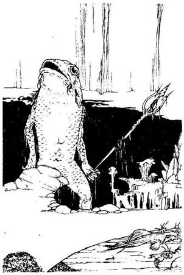
181.
Lemész a lépcsőn a vízesés mellett, és egy nagy barlangtóhoz érsz. A lépcsők a tó szélén vezetnek körbe, és a tó túlpartján egy kőasztalt meg egy széket látsz. Az asztalon néhány hal maradványát fedezed fel. Hirtelen csobbanást hallasz a hátad mögül. Egy különös teremtmény mászik ki a vízből, kezében háromágú szigonnyal. Lába akár az emberé, de a feje, teste és dülledt szeme egy hatalmas zöld halra emlékeztet. Karja olyan, akár a tiéd, csak éppen hatalmas pikkelyek borítják. Ez egy Halember, és meg kell küzdened vele.
Halember Ügyesség 7 Életerő 6
Ha legyőzöd - lapozz a 162-re.
182.
Megmarkolod a földből kiálló kardot, és lábadat nekitámasztod a sziklának. Dobj két kockával. Ha a kapott összeg ugyanannyi vagy kevesebb, mint jelenlegi ügyesség pontjaid száma, a kardot, lassan sikerül kihúznod a sziklából - lapozz a 70-re. Ha a kapott összeg nagyobb, mint jelenlegi ügyesség pontjaid száma, a kard meg sem moccan. Fáradtan feladod a küzdelmet, és továbbmész északnak a szurdokban - lapozz a 334-re.
183.
Igyekszel keveset beszívni a körülötted lévő mérges gázból, de úgy látod, minden rendben van, és szabadon lélegezhetsz. Kis idő múlva a gázfelhő
eloszlik. Mindazonáltal nem látod értelmét annak, hogy továbbra is itt maradj, és odamész a fal túlsó oldalán lévő lépcsőhöz. Lapozz a 293-ra.
184.
Elmondod a barátnak, hogy a dombok között egy Barlangi Trolltól elvettél egy rézcsengettyűt. Amikor megmutatod neki, nagyot ugrik örömében és így kiált: - Ó, köszönöm, micsoda szerencse, micsoda szerencse! - Belenyúl a derékszíjához, egy zsinórral odaerősített bőrbugyellárisba és elővesz belőle egy parányi üvegfiolát. Odaadod neki a rézcsengettyűt, és átveszed tőle a fiolát. Kihúzod a dugót a fiolából és kiiszod a tartalmát. Nyersz 4 életerő pontot! A barát köszönetképpen kezet ráz veled, és egyre csak hálálkodik. Végül is elbúcsúztok egymástól, te északnak mész tovább, a barát pedig délnek folytatja az útját. Lapozz a 390-re.
185.
Meglepetten látod, hogy sebesülésnek nyoma sincs a kezeden. Megpróbálod visszadugni a kezedet a vázába, de annak szájánál egy láthatatlan akadály meggátol ebben. Ha a földhöz vágod a vázát - lapozz a 250-re. Ha a vázát leteszed az előcsarnokban, és továbbmész az ösvényen északnak - lapozz a 149-re.
186.
Belépsz a folyóba, és nekivágsz, hogy átgázolj a túlsó partra. A víz elég sötét. Bár csak a derekadig ér, mégis kissé tartasz azoktól a teremtményektől, amelyek itt élhetnek a folyóban. Félelmed hirtelen
beigazolódik, éles fogak vájnak a combodba. Amikor lenyúlsz a víz alá, egy Vérangolnát tapintasz meg a lábadnál. Kardot rántasz, és azzal próbálod meg széthasítani a víz alatt.
Vérangolna Ügyesség 5 Életerő 4
Ha legyőzöd - lapozz a 131-re.
187.
Amint mész a kanyargós ösvényen, egyszer csak jobbra egy inas, barna, pikkelyes bőrű apró lényt pillantasz meg, aki egy fatuskó tetején ül. Arckifejezése mogorva, és ujjai között egy bőrzsineghez erősített fekete pálcát húzogat ide-oda. Lehetséges, hogy ö az egyik Goblin, akit keresel. Mit teszel?
Kardot rántasz, és rátámadsz a
Goblinra? Lapozz a 286-ra.
Megpróbálsz beszédbe elegyedni a
Goblinnal? Lapozz a 203-ra.
Nem veszel róla tudomást, és folytatod az
utadat észak felé? Lapozz a 6-ra.
188.
A dombról lefelé menet egy völgyet látsz a lábad előtt, amely mögött ott húzódik a Fekete Erdő baljós szegélye! A fákon túl van Kőhidafalva, utad célpontja. A völgy szélénél egy útelágazáshoz érsz. Ha itt nyugat felé mész tovább - lapozz a 221-re. Ha keletnek fordulsz - lapozz a 359-re.
189.
A zöld kalapos gombákat két humanoid locsolgatja. Ha enni akarsz egy keveset ezekből a gombákból - lapozz a 269-re. Ha a barlang túloldalán lévő lépcsőkön inkább kimennél innen - lapozz a 293-ra.
190.
Döngő léptek zaját hallod, és az alattuk megreccsenő faágakat. Mintha valamilyen hatalmas teremtmény közeledne feléd az ösvényen! Ha találkozni akarsz ezzel a vadállattal - lapozz a 265-re. Ha inkább elrejtőzöl az ösvény melletti bokrokban - lapozz a 318-ra.
191.
A barát idegesen toporog ide-oda, amikor megszólítod. Megkérdezed tőle, vajon miért oly zaklatott, mire elmondja, hogy ellopták tőle kicsiny sárgaréz csengettyűjét. Annak, aki visszaadja neki, felajánl egy varázserejű gyógyitalt. Van-e nálad sárgaréz csengettyű? Ha van - lapozz a 184-re. Ha nincs - lapozz a 243-ra.
192.
Kardot rántasz, de a Gnóm továbbra is ott ül törökülésben, és csak mosolyog rajtad. Lenézel a kezedre, és döbbenten látod, hogy nem a kardodat tartod, hanem egy répát! Ha bocsánatot akarsz kérni a Gnómtól, amiért ilyen meggondolatlan voltál - lapozz a 12-re. Ha inkább hozzávágod a sárgarépát - lapozz a 46-ra.
193.
Az aprócska, zöld bőrű Gremlin lemászik a létráról és belép az alagútba. Alig több mint egy méter
magas, és míg ő kényelmesen áll, addig döbbenten nézi, hogy te kétrét görnyedve férsz csak el az alagútban. Zubbonyának zsebéből egy tőrt húz elő, és rád támad. Meg kell küzdened vele:
Gremlin Ügyesség 4 Életerő 4
Minden egyes Fordulóban 3 pontot le kell vonnod a Támadóerődből, mivel igencsak kényelmetlen testhelyzetben kell harcolnod. Ha te győzöl - lapozz a 110-re.
194.
A férfi mosolyogva veszi le az álarcát, és közben elmondja, hogy azt a por ellen viseli, nem pedig azért, hogy elrejtse az arcát. Nem rabló ő, így nyugodtan visszadugod a kardod a hüvelyébe, és megkönnyebbülten lélegzel fel. A férfi közli, hogy ö vadász, és a Fekete Erdőnek ezen a füves tisztásán találhatók a legjobb vadak az egész északi határvidéken. Megtudod még tőle, hogy a kutyái egy vadkant vettek üldözőbe, de elvesztették a nyomot, és tévedésből egy rókát követtek. Figyelmeztet még, hogy légy óvatos, mert néhány igen veszedelmes vadállat tanyázik errefelé. Végül így szól: - Ha itt akarod tölteni az éjszakát a Fekete Erdőben, lehet, hogy szűkséged lesz erre. - Néhány szem nadragulyát dob a tenyeredbe, és visszapattan csődöre hátára. Belefúj a kürtjébe, mire kutyái rohanva indulnak el kelet felé. Megfordul, majd búcsút intve kutyái után ered. Elteszed a nadragulyát a hátizsákodba, és továbbmész nyugatnak. Lapozz a 208-ra.
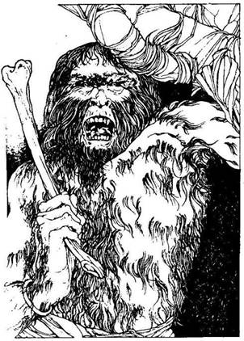
195.
Felérsz az inda tetejére, és onnan felmászol a fából készült emelvényre. Falevelekből és páfrányokból készített függöny takarja el a bejáratot, mely mögött egy apró lakótér húzódik meg. Amikor közelebb mész, a függöny félrelibben, és egy nagy, szőrös, majomszerű lény lép elő mögüle, akin csupán egy állatbőrből készített ágyékkötő van. Jobb kezében hatalmas csontot tart és azzal támad rád. Ez egy Majomember. Mit teszel?
Kardot rántasz, és azzal támadsz
rá? Lapozz a 352-re.
Leugrasz az emelvényről a közel öt méteres
mélységbe? Lapozz a 156-ra.
196.
Kivont karddal lépsz be a barlangba. A levegő hideg, nyirkos. Hangos horkolást hallasz, és amikor szemed megszokja a sötétséget, egy hatalmas testű Barlangi Trollt pillantasz meg, aki egy nagy kőszéken alszik. Bőre barna, ráncos, testét állatbőrök fedik. Térdén keresztbe fektetve egy bunkósbot hever, és a kőszék támlájáról egy bőrzsák lóg. Mit teszel?
Odalopakodsz a Barlangi Trollhoz, és amíg alszik,
elemeled a bőrzsákot? Lapozz a 376-ra.
Előveszed a hátizsákodból a Hajítóhálót
(ha van nálad)? Lapozz a 39-re.
Visszamész az útelágazáshoz, és ott északnak
fordulsz? Lapozz a 25-re.
197.
Ha van nálad Ellenméreg - lapozz a 24-re. Ha nincs - lapozz az 53-ra.
198.
Az ösvény egyre meredekebben kanyarog a dombok között. Mire felérsz a tetőre, tűzforrón süt a nap. Körös-körül a Fekete Erdő zöld szegélye övez. Köd lebeg mögötted a magas fű fölött, de a távolban már feltűnik előtted a napsütötte völgy. Minden nyugodt. Amikor kezdesz leereszkedni a domb túloldalán, egy útelágazást látsz. Ha északnak folytatod az utadat lefelé a dombon - lapozz a 278-ra. Ha kelet felé indulsz el az új úton - lapozz a 87-re.
199.
Az ösvény bal oldalán egy nagy mocsaras tó bugyog hangosan. Pára száll fel a kövér buborékokból, melyek ott rotyognak az iszap felszínén. Mit teszel?
Behajítasz egy Aranytallért a mocsár közepébe,
és kívánsz valamit? Lapozz a 134-re.
Egy kis iszappal bekened a
sebeidet. Lapozz a 283-ra.
Továbbmész északnak az
ösvényen? Lapozz a 303-ra.
200.
Előveszed a hátizsákodból a kis ezüst kulcsocskát, és beleilleszted a zárba. Remekül illik bele, és elfordítod. A zár kattan egyet, és a kőajtó kinyílik. Kőlépcsők vezetnek innen az ajtótól a sötét mélységbe. Semmit sem látsz a lépcsők mentén. Ha lemész a lépcsökön - lapozz a 351-re. Ha elhagyod az épületet, menj vissza az ösvényhez, és ott fordulj északnak - lapozz a 112-re.
201.
Ha eddig még nem tetted volna, most megpróbálhatod kinyitni a faládát - lapozz a 389-re. Ha ezt nem teszed, elhagyhatod a beugrót, és tovább mehetsz a lépcsőkőn. Lapozz a 88-ra.
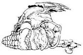
202.
A Macskanő mindkét fülében egy-egy aranygomb van. 5 Aranytallért érnek egyenként, és elteszed őket a hátizsákodba. Keletnek mész tovább a kanyargós ösvényen - lapozz a 355-re.
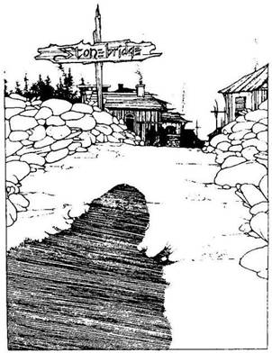
203.
Amikor beszélni kezdesz, a Goblin rád néz és elmosolyodik. A szemed láttára változtatja az alakját. Teste megnő, és zöld színűvé válik. Hatalmas tüskés farok nyúlik ki belőle, karja megvastagszik, ujjai végén éles karmok nőnek. Arca eltorzul, és hüllőszerűvé válik. Szeme vörös lesz, szájában több tucat borotvaéles fog jelenik meg. Nem Goblin ez, hanem egy Alakváltoztató, és meg kell küzdened vele.
Alakváltoztató Ügyesség 10 Életerő 10
Ha legyőzöd - lapozz a 373-ra.
204.
Az ösvény a szántóföldön vezet át egy patakon átívelő kőhídig. A híd túloldalán apró házak és fakunyhók sorakoznak. A hídon lévő útjelző táblán ez áll: Kőhidafalva. Átmész a hídon, ahol két, hosszú fehér szakállas törpét látsz egy ház előtt, akik téged néznek. Van-e nálad egy G betűvel jelzett baltafej és egy ugyancsak G betűvel jelzett baltanyél? Ha van - lapozz a 400-ra. Ha egyik sincs nálad vagy csak az egyik van nálad - lapozz a 381-re.
205.
Mindegyik Pigmeus nyakában egy kicsinyke bőrerszény lóg. Mindegyik erszényben 3 Aranytallért találsz. Elteszed az aranyat, és visszatérsz az ösvényhez, ahol észak felé folytatod az utadat. Lapozz a 92-re.
206.
Az ösvényről, bal kéz felől hirtelen segélykiáltásokat hallasz. Ha a bajba jutott segítségére sietsz - lapozz a 253-ra. Ha nem törődsz a segélykiáltással, és inkább folytatod az utadat északnak - lapozz a 187-re.
207.
Átlépsz a Majomember testén, és belépsz a lakószobájába. A földön állatcsontok és rothadt gyümölcsmaradványok hevernek szanaszét. A Majomember ágya mohából, zuzmóból készült, és úgy látod, csak úgy nyüzsög benne a sok bolha. Megborzongsz a látványtól, és undorral lépsz vissza az emelvényre. Ekkor a Majomember karján egy réz karkötőt pillantasz meg. Ha a saját csuklódra akarod felhúzni - lapozz a 302-re. Ha inkább visszamászol az indán az ösvényre, és ott északnak folytatod az utadat - lapozz a 109-re.

208.
Csakhamar egy útkereszteződéshez érsz. A délnek vezető út visszavisz az erdőbe, ezért úgy döntesz, hogy nem mész arra. Mehetsz nyugat felé - lapozz a 99-re, vagy északnak - lapozz a 291-re.
209.
Amikor belépsz a kunyhóba, a hatalmas ember mosolyogva fogad. Örül, hogy jöttél, és mély hangon így szól hozzád: - Üdvözöllek, idegen! A nevem Quin, és a karom erejéből tengetem életemet. Mit szólnál egy kis szkanderezéshez? Nem lenne kedved fogadni velem, hogy melyikünk az erősebb? Ha elfogadod a kihívását - lapozz a 28-ra. Ha udvariasan visszautasítod ajánlatát, és visszamész az ösvényen az útelágazásig lapozz a 349-re.
210.
A férfiak átkozódva ugrándoznak le-föl mérgükben, amiért nem találtak el. Vitatkozni kezdenek egymással, és lökdösődnek. Úgy látod, teljesen megfeledkeztek rólad. Ha meg akarod támadni a Vad Dombi Embereket - lapozz a 43-ra. Ha elmész mellettük az ösvényen, amíg vitatkoznak - lapozz a 188-ra.
211.
Előveszed a hátizsákodból az Ellenméreg feliratot viselő kis üveget és kiiszod a tartalmát. Gyomorfájásod lassan elmúlik, és kifújod magad. Nem látod értelmét annak, hogy tovább időzz itt és odamész a barlang utolsó falába vájt lépcsőkhöz. Lapozz a 293-ra.
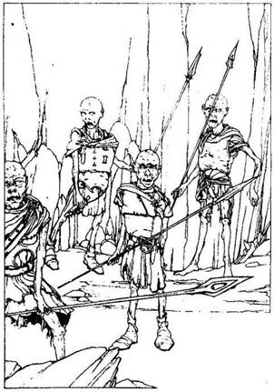
212.
A beugróban még négy apró humanoidot látsz. Bőrpáncél borítja a testüket, és hosszú dárdákkal vannak felfegyverezve. Rád támadnak, és egyenként kell megküzdened ezekkel a Harcos Bábukkal.
Ügyesség Életerő
Első Harcos Bábu 5 5
Második Harcos Bábu 6 4
Harmadik Harcos Bábu 5 6
Negyedik Harcos Bábu 6 5
Ha te győzöl - lapozz a 321-re. Ha akarsz, elmenekülhetsz. Rohanj ki a beugróból, és fuss fel a lépcsőkön - lapozz a 107-re.
213.
Fák és bokrok között kanyarog az ösvény, majd egy újabb útkereszteződéshez ér. Úgy látod, hogy a dél felé vezető ösvény visszavisz a völgybe, és ezért úgy döntesz, hogy nem erre mész tovább, hanem északnak fordulsz. Lapozz a 306-ra.
214.
Benyúlsz a hátizsákodba és előveszed belőle a Gyógyitalt. A lábad iszonyatosan sajog, de amint a szer hatni kezd, fájdalmad azonnal elmúlik. Lábad csakhamar rendbe jön, és képes vagy talpra állni. Szemed mostanra már megszokta a sötétséget, és így jól látod, hogy a barlang csupán egy méter magas, ezért négykézláb mászva kell átkutatnod. Lapozz a 69-re.
215.
A hordóban egy masszív vassisakot találsz. Ha magaddal akarod vinni - lapozz a 248-ra. Ha nem akarsz hozzányúlni - lapozz a 201-re.
216.
Az ösvény a hegygerincen fut végig, és egy útkereszteződésbe torkollik. A dél felé vezető út visszavisz, a folyóhoz, ezért úgy döntesz, hogy északnak folytatod az utadat. Lapozz a 278-ra.
217.
Megkerülöd a féreg élettelen testét, majd megvizsgálod a fészkét. Számos csontvázat találsz benne, mely valószínűleg az előző, szerencsétlenül járt kalandoroké lehet. Az egyik csontváz mellett egy bőr hátizsákra lelsz, melyben 4 Aranytallér lapul, valamint egy színtelen folyadékot tartalmazó, dugóval lezárt üveget. Ha inni akarsz az üvegből - lapozz a 262-re. Ha inkább elhagyod ezt a sötét barlangot, és a 2 aranyat magadhoz véve visszamászol az ösvényre - lapozz a 337-re.
218.
Nagyot káromkodsz, miközben azon tűnődsz, vajon ki helyezte el itt ezt az átkozott csapdát. Úgy tíz perc múlva léptek zaját hallod, és ijedten kapálózva megpróbálod a hurokból kiszabadítani a lábadat. Ekkor egy kisfiút veszel észre, aki rövid zöld bőrnadrágot és zöld inget visel. Úgy látod, egy csirkecsontot rágcsál. Odamegy alád, felnéz, s nevetve így szól: - Nahahha! Valaki fennakadt az Ogre csapdáján! - Szépen megkéred, hogy adja fel neked a kardodat. - 5 Aranytallérért megteszem,
de elfogadok egy szép varázstárgyat is! - mondja tágra nyílt szemmel. Nem vagy abban a helyzetben, hogy alkudozz vele, és így vagy oda kell adnod neki az aranyakat, vagy egy varázstárgyadat (ha rendelkezel vele). Jelöld a változást a Kalandlapodon. A kisfiú feladja neked a kardodat, majd elfut az ösvényen. Átvágod a lábadat fogva tartó kötelet, és lezuhansz a földre. Feltápászkodsz és leporolod a ruhádat. Észak felé folytatod az utadat. Lapozz a 274-re.
219.
Észreveszed, hogy a Medve melléből kiálló parányi nyílvessző ezüstből van. 5 Aranytallért ér, és ha akarod, elteheted a hátizsákodba. Nyersz 1 szerencse pontot, amiért rátaláltál. Visszamész az ösvényhez, és folytatod az utadat észak felé. Lapozz a 300-ra.
220.
A keskeny ösvényen haladva bal kéz felől hatalmas fát veszel észre, melynek törzsében egy nagy lyuk tátong, kissé magasabban, mint ameddig a fejed ér. Ha fel akarsz nyúlni a lyukba - lapozz a 275-re. Ha inkább folytatod az utadat észak felé - lapozz a 115-re.
221.
A völgyet buja zöld fű borítja. Csakhamar egy újabb útelágazáshoz érsz az ösvényen. Innen vagy nyugat felé mehetsz tovább - lapozz a 378-ra, vagy továbbra is északnak - lapozz a 199-re.
222.
Nem tudsz menekülni a mérges gáztól, mely teljesen elborít. Úgy érzed, mintha szétpattanna a tüdőd, de nem tudsz mit tenni, be kell szívnod a gázt. Dobj egy kockával, és a kapott számot vond le életerő pontjaidból. Ha még mindig életben vagy, a gázfelhő szép lassan eloszlik, és ismét szabadon lélegezhetsz. Nincs értelme, hogy tovább itt maradj, ezért odamész a barlang túlsó oldalába vájt lépcsőkhöz. Lapozz a 293-ra.
223.
A nyakadban lógó ékszer izzani kezd. Lehet, hogy Arragon nem az, akinek mondja magát! Arcáról eltűnik a bizalom jele, és azt a félelem váltja fel. Kardot rántasz, és felelősségre vonod. Ekkor bocsánatot kér tőled, amiért ilyen agresszív volt veled szemben, de egyúttal elmondja, hogy ez a vidék tele van banditákkal és gyilkosokkal, s ezért úgy védekezik, hogy hatalmas erejű varázslónak adja ki magát. Bocsánatodért esedezik, és felajánl neked 5 Aranytallért, ha szabadon engeded, és senkinek nem árulod el, hogy milyen álruhában van. Elfogadod az ajánlatát és elhagyod a házát. Visszatérsz az útelágazáshoz, és északnak mész tovább. Lapozz a 150-re.
224.
Az egyik Halálsólyom egyik lábán egy ezüstgyűrűt találsz. A következő felirat áll rajta: "Halál vár rád!" Úgy döntesz, nem nyúlsz az ezüstgyűrűhöz, hanem gyorsan továbbmész nyugat felé. Lapozz a 332-re.
225.
Káromkodva vonszolod oda magad a vízből az alagút bejáratához. Meglepetten látod, hogy az alagút mindkét oldalát szabályos távolságokban elhelyezett fáklyák világítják meg. Ha végig akarsz mászni az alagúton, lapozz a 135-re. Ha visszamászol a létrán és visszamész az ösvényre - lapozz a 362-re.

226.
Az ösvénytől jobbra, számodra ismeretlen nyelvű veszekedés hangjait hallod a fák közül. Ha letérsz az útról, és megnézed, mi történik ott - lapozz a 29-re. Ha nem törődsz a veszekedésekkel, és inkább továbbmész északnak az ösvényen - lapozz a 254-re.
227.
Egy Ghoul akar megragadni karmaival.
Ghoul Ügyesség 9 Életerő 7
Ha ez a teremtmény ebben a harcban négyszer sebez meg, akkor képes teljesen megbénítani. Ha legyőzöd a Ghoult - lapozz a 312-re. Ha ő öl meg téged vagy megbénít - lapozz a 2-re.

228.
A verem kör alakú, az oldala sima, te pedig az eséstől igen gyenge vagy. Hátizsákodból előveszed a barna bőrcsizmádat. Olyan, mintha semmi sem lenne a lábadon, amikor felveszed. Leguggolsz, és nagy lendülettel kiugrasz a veremből. Leporolod magad, és észak felé mész tovább a szurdokban. Lapozz a 255-re.

229.
Amikor hozzáérsz a faládához, anélkül hogy felnyitnád, azonnal felpattan a teteje. A ládából egy apró termetű, nagy fejű, zöld bőrű teremtmény pattan ki. Hosszú orra, hegyes füle van, és zsákvászon ruhát visel. Meglepődsz, amikor a Gremlin tőrével rád támad. Tedd próbára a Szerencsédet! Ha szerencséd van, sikerül elugranod a tőr pengéje elől - lapozz a 165-re. Ha nincs szerencséd, a tőr beleáll a combodba - lapozz a 45-re.

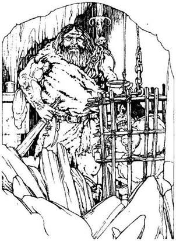
230.
Lassan belesel a barlangba, ahonnan épp egy óriás termetű Ogre cammog ki egy ketrechez, hatalmas kezében egy csésze vízzel. Testét állatbőrök borítják, és öve mögé dugva egy kőből készült bunkósbot lóg ki. A ketrecben egy parányi teremtmény ugrándozik. Mit teszel?
Felkapsz egy követ és az Ogréhoz
vágod? Lapozz a 137-re.
Karddal támadsz az Ogréra? Lapozz a 290-re.
Kimész a barlangból és folytatod az utadat
az ösvényen? Lapozz a 358-ra.
231.
A kanyargós ösvény hirtelen nyugatnak indul. Ezen az új szakaszon hatalmas vijjogást és szárnycsapkodást hallasz a fák között. Amikor felnézel, három hatalmas madarat látsz, amelyek épp lecsapni készülnek rád. Csőrük és karmuk borotvaéles. Másodperceid vannak arra, hogy kardot ránts, és megvédd magad a Halálsólymoktól.
Ügyesség Életerő
Első Halálsólyom 4 4
Második Halálsólyom 4 3
Harmadik Halálsólyom 5 4
Küzdj meg velük egyenként, és ha te győzöl - lapozz a 224-re. Elmenekülhetsz, ha akarsz, fuss nyugat felé az ösvényen - lapozz a 332-re.
232.
Lehajolsz az őrjöngő Goblin élettelen teste fölé, és megvizsgálod a nyakában lógó, apró kis rudacskát. Ébenfából készült, és az egyik végén egy csavarmenet látszik. Izgatottan veszed észre, hogy a rudacska másik végébe egy G betűt véstek. Ebből arra következtetsz, hogy csakis ez lehet a törpék elveszett pörölyének a nyele. Szerzeményedet beleteszed a hátizsákodba. Nyersz 1 Szerencse pontot. Ha át akarod kutatni a barlangot - lapozz a 263-ra. Ha kimész a barlangból, és észak felé folytatod az utadat - lapozz a 358-ra.
233.
Az ösvény jobb oldalán egy kőkutat látsz, a hozzá tartozó vödörrel és vízfelhúzó kerékkel. Ha közelebbről meg akarod nézni a kutat - lapozz a 17-re. Ha inkább továbbmész nyugatnak - lapozz a 238-ra.
234.
Visszatérsz az ösvényen lévő elágazáshoz. A nyugat felé vezető úton mész tovább, nem pedig délre. Lapozz a 382-re.
235.
Gyorsan előveszed a hátizsákodból a gyógyító elixírrel teli bedugaszolt üvegcsét. Miután kiiszod a folyadékot, a körülötted lévő zűrzavar ellenére teljesen megnyugszol. A kunyhó hirtelen összedől. Úgy érzed, ez az a pillanat, amikor el kell hagynod ezt a helyet, és visszafutsz az ösvényhez, ahol északnak folytatod az utadat. Nyersz 1 szerencse pontot. Lapozz a 149-re.
236.
Az ösvény egy zsúpfedeles kőháznál ér véget. Az ajtó felett egy táblán ezt olvasod: "Arragon, a Főmágus." Ha be akarsz menni a házba - lapozz a 170-re. Ha inkább visszamész az útelágazáshoz, és ott északnak fordulsz - lapozz a 150-re.
237.
Lezuhansz a földre, és ekkor ronda csattanó hangot hallasz. Fájdalom hasít a lábadba, és amikor megnézed, látod, hogy eltörött. Vesztesz 2 Szerencse pontot! Van-e nálad Gyógyír? Ha van - lapozz a 214-re. Ha nincs - lapozz a 304-re.
238.
Nyugat felé mész a völgyben, és egy útkereszteződéshez érsz. Az egyik út délnek visz, vissza a dombok közé. Úgy döntesz, hogy továbbra is nyugatnak mész tovább. Lapozz a 221-re.
239.
Az ösvény a sűrű aljnövényzetben vezet át az erdőn, és kissé szorongasz a fák rengetegében. Kis idő múlva az ösvény éles kanyart vesz balra egy különös gyümölcsöt termő fánál. Ha meg akarsz állni ennél a fánál és eszel a gyümölcséből - lapozz a 37-re. Ha nem állsz meg enni, hanem továbbmész észak felé - lapozz a 226-ra.
240.
Óvatosan felfeszíted a doboz tetejét, de ekkor sárga gáz csap ki belőle, egyenesen az arcodba. Ha van nálad Orrszűrő - lapozz a 338-ra. Ha nincs - lapozz a 169-re.
241.
Amint átvágsz a fák között a morgó hang irányába, hirtelen egy hatalmas barna Medvével találod szembe magad. Melléből egy apró nyílvessző áll ki, és alig lát a fájdalomtól és a dühtől. Előrántod a kardodat, és felkészülsz a küzdelemre.
Medve Ügyesség 7 Életerő 8
Ha legyőzöd - lapozz a 219-re.
242.
Amikor átkutatod a fiókos szekrényt, egy aranyrudat találsz benne, 28 Aranytallért ér. Igen nehéz, és ezért ha magaddal akarod vinni néhány tárgyadról le kell mondanod. Vedd ki a hátizsákodból ezeket a tárgyakat és jelöld a Kalandlapodon is a hiányukat. Nincs másik kijárat a barlangból, és így vissza kell másznod az alagúton, egészen az elágazásig - lapozz a 121-re.
243.
Azt mondod neki, hogy nagyon sajnálod, de nem láttad a rézcsengettyűjét. A szegény öreg barát felhúzza a szemöldökét, és megkérdi, nem. Segítenéd e meg 1 Aranytallérral. Ha adsz neki 1 Aranyat - lapozz a 166-ra. Ha nem adsz neki semmit - lapozz a 33-ra. '
244.
Végül is a lázad elmúlik, és sikerül ismét elaludnod. Reggel összeszedelődzködsz, és elindulsz észak felé, a dombok irányába. Lapozz a 198-ra.
245.
Amikor a völgyhöz érsz, az ösvény háromfelé ágazik. Ha északnak mész tovább Lapozz a 163-ra. Ha nyugatnak mész Lapozz a 233-ra. Ha keletnek mész Lapozz a 393-ra.
246.
A Bandita nő átveszi tőled a tárgyakat, és megengedi, hogy továbbmenj. Ismét északnak veszed az utadat, és csakhamar észreveszed, hogy a fák ritkulni kezdenek körülötted az ösvény mindkét oldalán. Végül az ösvény egy szántóföldnél ér véget. Lapozz a 204-re.
247.
Az undorító Pterodactylus, miután kardoddal rámérted a végzetes csapást, ott fekszik összegörnyedve, összezúzva a földön. Amikor odamész hozzá, az ösvény melletti fűben egy sárga nyilat pillantasz meg, mely nyugat felé mutat. Ha a nyíl irányába mész tovább - lapozz a 3-ra. Ha északnak mész továbbra is az ösvényen - lapozz a 144-re.
248.
Egy híres fegyverkészítő mester keze munkáját dicsérő régi császári pajzs birtokába jutottál. Nyersz 1 szerencse pontot. Az elkövetkező csatákban nagyobb védelmet nyújt majd neked ez a pajzs. Dobj egy kockával, hogy megtudd, vajon a teremtmény megsebzett-e. Ha 4-et vagy 6-ot dobsz, a sebesülésért 1 ponttal kevesebbet vonj le magadtól. Ha még nem tetted volna, most vagy kinyithatod a faládát - lapozz a 389-re, vagy elhagyhatod a beugrót, és továbbmehetsz a lépcsőkön - lapozz a 88-ra.

249.
Visszanézel a különös barlangba, ahol a humanoid rabszolgák tovább dolgoznak a gombamezőn. Hitetlenkedve csóválod a fejedet, és felrohansz a lépcsőkön a barlangnyíláshoz. Lapozz a 164-re.
250.
A vázát földhöz vágtad, de az nem tört el, csupán megrepedt. Ekkor megremeg a föld és hatalmas repedések támadnak a veranda kövezetén meg a ház falain. A remegés egyre erősödik - egész tested reszketni kezd, és úgy érzed, mintha szét
akarna robbanni a fejed. Vesztesz 2 életerő pontot. Ha még mindig életben vagy, lapozz a 82-re.
251.
Amikor kardot rántasz, a Kentaur előveszi az íját és a nyílvesszőit. Mielőtt még kardoddal rávághatnál, egy nyílvesszőt lő ki rád. Dobj két kockával. Ha a dobott szám ugyanannyi vagy kevesebb, mint ügyesség pontjaid száma, sikerül kivédened a nyílvesszőt - lapozz a 63-ra. Ha a dobott összeg nagyobb, mint ügyesség pontjaid száma, akkor nem tudod kivédeni a nyílvesszőt, és az beleáll a válladba. Vesztesz 4 életerő pontot! Ha még mindig életben vagy, húzd ki a válladból a nyílvesszőt, és lapozz a 260-ra.

252.
Egy útkereszteződéshez érsz. A dél felé tartó ösvény visszavisz az erdőbe, ezért nem erre mész. Ha északnak folytatod az utadat - lapozz a 309-re. Ha kelet felé mész tovább - lapozz a 72-re.

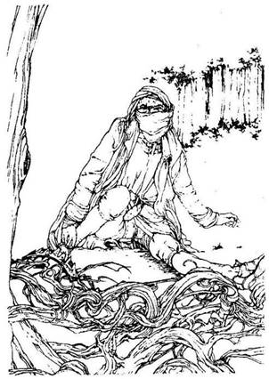
253.
A göcsörtös gyökerek között bukdácsolva a kiáltó hang irányába mész. Néhány perc múlva egy hosszú sötét kaftánba öltözött férfit pillantasz meg, akinek lábát becsípte egy rozsdás nyúlcsapda. Az arcát fedő kendő mögül csupán két sötétbarna szeme látszik ki. Ha segítesz kiszabadítani a férfi lábát - lapozz a 344-re. Ha úgy döntesz, hogy nem segítesz neki, menj vissza az ösvényhez, és indulj tovább északnak - lapozz a 187-re.
254.
Kissé följebb, s keskeny ösvénytől balra, a fák közül mély morgást hallasz. Ha meg akarod nézni, milyen lény az, amely ezt a hangot kiadja - lapozz a 241-re. Ha nem törődsz ezzel a lénnyel, és inkább folytatod az utadat északnak az ösvényen - lapozz a 300-ra.
255.
A szurdokban mész, amikor az ösvény szélén, egy nagy szikla mögött, egy földbe szúrt kard kiálló nyelét pillantod meg. Ha megpróbálod kihúzni a kardot a földből - lapozz a 182-re. Ha továbbmész a szurdokban - lapozz a 334-re.
256.
Amikor lemászol a létrán, nem veszed észre, hogy az egyik fok hiányzik. Megcsúszol, és elvéted a fokot. Tedd próbára a Szerencsédet! Ha szerencséd van, sikerül megkapaszkodnod a létrában - lapozz a 122-re. Ha nincs szerencséd, lezuhansz a létráról és belepottyansz a vízbe. Lapozz a 295-re.
257.
A hátizsákban találsz egy kevés Elf kenyeret, s 4 életerő pontot nyerhetsz, ha megeszed. Kapsz 1 szerencse pontot is, és lapozz a 31-re.
258.
Belenyúlsz a hátizsákodba és előhúzol belőle egy aprócska sárgaréz furulyát. Valami furcsa oknál fogva úgy érzed, hogy most kell rajta játszanod ez előtt a dühödt Sárkány előtt. Amikor játszani kezdesz, és felhangzik a lágy furulyaszó, a Sárkány arcán nevetséges kifejezés jelenik meg. Szája becsukódik és már a szemét is alig-alig tudja nyitva tartani. A mágikus Sárkányaltató Furulyán játszol, melynek a Sárkány képtelen ellenállni. Szép lassan elterül a földön és elalszik. Lapozz a 305-re.
259.
Szinte ég a tested a hatalmas láztól. Lehet, hogy magad is Farkasemberré fogsz most változni? Vesztesz 3 Életerő pontot és tedd próbára a Szerencsédet, ha még mindig életben vagy. Ha a kapott összeg ugyanannyi vagy kevesebb, mint szerencse pontjaid száma, a lázad elmúlik - lapozz a 244-re. Ha a kapott összeg nagyobb, mint szerencse pontjaid száma, a lázad egyre fokozódik, és rémülten veszed észre, hogy kézfejedet sűrű barna szőr kezdi elborítani. A sokkhatástól újabb 2 életerő pontot vesztesz. Ha még mindig életben vagy - lapozz a 19-re.
260.
Amikor a Kentaur észreveszi, hogy a nyílvessző nem ölt meg, felemelkedik két hátsó lábára, és vágtatva indul el feléd. Vissza kell ugranod, nehogy letaposson. Hatalmas porfelhőt kavarva vágtat el melletted, majd vagy tíz méterrel lejjebb megáll azon az ösvényen, amelyen idejöttél. Lehet, hogy nem volt igazán jó ötlet harcba szállni ezzel a pompás Kentaurral. Visszadugod a kardodat a hüvelyébe, és úgy döntesz, hogy átgázolsz a folyón. Lapozz a 178-ra.
261.
Követed az erősen ziháló, fújtató, szakadt ruhát viselő öreget felfelé a csigalépcsőn, a torony tetejében lévő nagy szobába. A falakat mindenütt polcok, szekrények, vitrinek borítják, melyekben üvegek, kancsók, fegyverek, páncélruhák és mindenféle egyéb tárgyak sorakoznak. Yaztromo a hatalmas rendetlenségben odamegy egy öreg tölgyfaszékhez és lerogy rá. Benyúl mellényzsebébe, és elővesz egy kecses aranykeretes okulárét. Az orrára helyezi, majd a mellette lévő asztalról elvesz
egy palatáblát meg egy darabka krétát, és sebesen írni kezd. Amikor végez, átnyújtja a palatáblát.
TÁRGY ÁR
Gyógyital 3 Aranytallér
Növényelleni szer 2 Aranytallér
Nyugtatószer 3 Aranytallér
Rovarelleni szer 2 Aranytallér
Ellenméreg 2 Aranytallér
Szentelt Víz 3 Aranytallér
Fénygyűrű 3 Aranytallér
Szökkenő Csizma 2 Aranytallér
Mászókötél 3 Aranytallér
Hajító háló 3 Aranytallér
Erőkarszalag 3 Aranytallér
Hajító kesztyű 2 Aranytallér
Vízkutató pálca 2 Aranytallér
Fokhagymagerezd 2 Aranytallér
Koncentrálást elősegítő fejpánt 3 Aranytallér
Tűzkapszulák 3 Aranytallér
Orrszűrő 3 Aranytallér
Elmondja még, hogy minden tárgyhoz használati utasítást mellékelt, melyből világosan megtudod, miképp kell azt alkalmazni. Miközben nagyot sóhajt, közli még, hogy sajnos ezek a varázstárgyak csupán egy alkalommal hatnak, de ennyi pénzért jobbat nem kapsz sehol. Ha úgy döntesz, hogy valamelyik tárgyat megveszed, vond le annak árát a Kalandlapon meglévő Aranyaidból, valamint jegyezd be a megfelelő rovatba azt is, hogy mit vettél. Ekkor Yaztromo megkérdezi tőled, vajon mi szükséged ezekre a tárgyakra. Elmeséled neki találkozásodat Nagylábbal, és azt, hogy folytatod
az általa megkezdett kutatást. - Ó, igen - mondta lassan Yaztromo, állát vakargatva, hallottam hírét, hogy a jóságos kőhidafalvai törpék elvesztették mesebeli Harci Pörölyüket, amely nélkül királyuk képtelen csatasorba állítani népét, annak ellenére, hogy a hegyi trollok igencsak fenyegetik a falujukat. Az a hír járja, hogy egy másik törpe falu irigy királya egy sast küldött Kőhidafalvára, hogy lopja el a pörölyt, amit sikerrel meg is tett. Ám miközben a pöröllyel visszafelé röpült az erdő fái közé, az eltűnt. Úgy hírlik, hogy két erdei goblin talált rá, de képtelenek voltak megegyezni abban, melyikük tartsa meg. Órákon át civakodtak egymással, mígnem feladták. Ekkor észrevették, hogy a pöröly fejét le lehet csavarni a nyélről, így a dolog megoldódott. Egyikük megtartotta a pöröly fejét, a másik meg a nyelét, majd elváltak egymástól. Boldogan folytatta mindenki a maga útját. Ki tudja, náluk van-e még a szerzeményük. Az az érzésem, súlyos gondok előtt állsz. Annyit tudok, hogy a pöröly feje bronzból készült, a nyele pedig fényesre csiszolt ébenfából. Mind a fejbe, mint pedig a nyélbe egy G betű van belevésve. Feladatod nem könnyű. Sok szerencsét hozzá. Megköszönöd Yaztromo értékes tanácsát, majd elbúcsúzol tőle és lemész a csigalépcsőn. Lapozz a 177-re.

262.
Ránézet a kezedben lévő üvegre, majd kiteszed a tartalmát. Néhány másodpercig vársz, hátha érzel valami változást, de nem érzel semmit. Mikor azonban fölemeled a kardodat, melyet akkor tettél le, amikor átvizsgáltad a hátizsákodat, hatalmas önbizalom tölt el. A folyadék, amit ittál, Kardforgató Tehetséget növelő varázsital, mely ezt követően 1 ponttal növelni fogja Támadóerő pontjaid számát, amelyeket dobókockával állapítasz majd meg a harc kezdetén. Hatása a következő két ellenfeleddel való összecsapás idejére tart ki. Magadhoz veszed az aranyat, és négykézláb mászva nagy nehezen kikecmeregsz a föld alatti barlangból a felette lévő ösvényre, ahol észak felé folytatod az utadat. Lapozz a 337-re.

263.
Nincs túl sok érdekes dolog a barlangban. Egy szalmamatrac, néhány kőkorsó, egy asztal meg egy szék az összes bútor, de az ágy fölötti kőpolcon észreveszel egy ezüstládikót. Ha ki akarod
nyitni a ládikót - lapozz a 126-ra. Ha inkább kimész a barlangból, és az ezüst ládikó nélkül folytatod az ösvényen északnak az utadat - lapozz a 358-ra.
264.
Az apró humanoid egy bábu, melynek nincs önálló akarata. Ellenállást nem tanúsít. Karddal lekaszabolod a fejét, mely a földre hullik. A többiek észre sem veszik. Kíváncsi vagy, vajon ki felügyel rájuk. Hirtelen észreveszed, hogy az általad lefejezett humanoid bábu bíborszínű folyadékká válik, és a talajból egy újabb gomba nő ki. Ahogy a gomba nő, úgy szívódik fel a talajba a folyadék. A kinőtt gomba kalapja bíborszínű, és szembefordul veled. Mit teszel?
Ott maradsz, és tovább nézed a bíborkalapos
gombát? Lapozz a 367-re.
Odamész a zöld kalapos
gombához? Lapozz a 189-re.
Odamész a piros kalapos
gombához? Lapozz a 282-re.

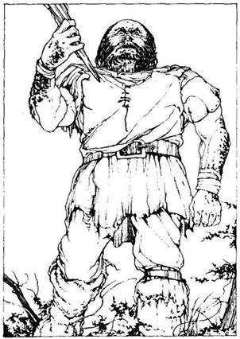
265.
A dobogás és a hatalmas robaj egyre közelebbről hallatszik, majd hirtelen egy óriási méretű láb jelenik meg előtted. Felnézel, és ekkor látod, hogy a láb gazdája egy közel öt méter magas ember. Barna vászonruha van rajta és szőrmecsizma. Úgy látod, sietős az útja, és úgy gázol át a bokrokon, mintha azok ott sem lennének. Ez egy Erdei óriás. Amikor meglát, a magasba emeli hatalmas méretű fabunkóját. Meg kell küzdened vele.
Erdei óriás Ügyesség 9 Életerő 9
Ha legyőzöd - lapozz a 356-ra.
266.
Quin közli veled, hogy némi Lebegtető port tud felajánlani egy 10 Aranytallért érő tárgyért vagy érméért cserébe. Leülsz vele szemben az asztalhoz. Könyöködet az asztal lapjára helyezed és összekulcsolod a kezedet az ő kézével. Marka akár a vassatu, és fekete, ferde metszésű szeme szemtelen pillantást vet rád. Bicepsze megfeszül, és ekkor jelzi, hogy kezdetét veszi a verseny. Dobj két kockával! Ha a kapott összeg kevesebb, mint ügyességed, nagy erőfeszítések árán sikerül a karját kissé lenyomnod. Ellenfeled erős, és nem hagyja könnyen legyőzni magát. Egymás után kétszer kell sikerrel dobnod ahhoz, hogy kezét az asztal lapjára fektesd. Ha sikerrel jársz - lapozz a 354-re. Ha a három dobásod közül bármelyik összege meghaladja ügyesség pontjaid számát, Quin fogja a te kezedet az asztal lapjára lenyomni. Lapozz a 129-re.
267.
Az ösvény egy hatalmas barlang bejáratához vezet. Ha be akarsz menni a barlangba - lapozz a 196-ra. Ha inkább visszatérsz az elágazáshoz, és ott északnak fordulsz - lapozz a 25-re.
268.
Gyorsan belenyúlsz a hátizsákodba és előveszed belőle a fokhagymagerezdeket. A Vámpír Denevérek már-már elérnek, amikor az utolsó pillanatban hangosan rikoltozva tovaröppennek. Ott köröznek vérszomjasan fölötted, de a fokhagyma távol tartja őket tőled. Végül más áldozat után vetik magukat. Odateszed magad mellé a fokhagymát, és aludni térsz. Reggel felszedelődzködsz, és továbbmész az ösvényen északnak. Lapozz a 119-re.
269.
Odakiáltasz a zöld kalapos gombákat gondozó humanoidoknak. Rád se hederítenek, csak dolgoznak tovább. Megragadod az egyik gomba kalapját és letörsz belőle egy darabkát, majd eszegetni kezded. Nagyon ízletes és erőre kapsz tőle. Nyersz 4 életerő pontot. Nem látod értelmét, hogy tovább maradj itt, és odamész a barlang túloldalán lévő lépcsőkhöz. Lapozz a 293-ra

270.
Az alagút egy barlang szájánál ér véget. Amikor belépsz a nyíláson, észreveszed, hogy a barlang semmivel sem magasabb, mint az alagút volt, és képtelen vagy benne felállni. Az apró bútorokból ítélve valamiféle értelmes lény lakhat itt. A barlang mélyében egy közel egy méter hosszú faládát látsz. Ha fel akarod emelni a láda fedelét - lapozz a 229-re. Ha visszamész az alagúton az útelágazásig - lapozz a 121-re.
271.
Kinyújtott kézzel közelítesz a Gnóm felé, és kezet akarsz rázni vele, amit ő kétkedve fogad. Elmondod neki, mi járatban vagy errefelé, meg azt is, miként találkoztál szegény Nagylábbal, és hogy miért döntöttél úgy, hogy segítesz Kőhidafalva törpéinek. Megkérdezed, tud-e mondani neked olyasmit, ami a segítségedre lehet. Közli veled, hogy a tőrpék ugyan nem igazán érdeklik, de tud szolgálni némi hasznos információval. Ezt azonban nem adja ingyen: vagy 5 Aranytallért fizetsz érte, vagy adsz neki egy kincset a hátizsákodból. Ha fizetsz a kapzsi Gnómnak az információért - lapozz a 297-re. Ha ezt nem teheted, vagy nem akarod megtenni, közöld vele a véleményedet, és folytasd az utadat nyugat felé. Lapozz a 67-re.
272.
Utoljára tettél szívességet bárkinek is! Visszamész az ösvényhez és ott ismét észak felé indulsz. Lapozz a 394-re.
273.
Leveszed a medált a halott Gremlin nyakából. Aranyból van, és 9 Aranytallért ér. Semmi egyéb hasznosat vagy értékeset nem találsz a barlangban. Nincs más kijárat a barlangból, s ezért vissza kell másznod az alagúton az útelágazáshoz. Lapozz a 296-ra.

274.
Tőled balra a faágról egy csavart vastag inda lóg le. Amikor fölnézel, az ágak között egy gallyakból összetákolt kis házikót pillantasz meg. Ha fel akarsz mászni az indán a házhoz - lapozz a 195-re. Ha továbbmész északnak - lapozz a 109-re.
275.
Óvatosan benyúlsz a sötét lyukba, és valami kemény, hideg tárgyat tapintasz ki. Mintha egy fémedény lenne, úgy érzed. Amikor megpróbálod kihúzni, hirtelen fájdalom hasít a kezedbe, mintha valami apró lény mart volna beléd a fogaival. Gyorsan kihúzod a kezedet, és magaddal rántod a tárgyat is. Sebedből patakokban folyik a vér. Vesztesz 1 életerő pontot! Amikor szerzeményedet jobban megnézed, akkor látod, hogy az egyáltalán nem fémedény, hanem egy bronzsisak, mely, úgy látod, épp a te méreted. Mit teszel?
Felpróbálod a sisakot? Lapozz a 179-re.
Elhajítod a sisakot, és továbbmész
északnak? Lapozz a 115-re.
276.
Amikor rátámadsz a maszkos lovasra, a négy kutya közül a legnagyobb rád veti magát, és meg kell küzdened vele.
Vadászkutya Ügyesség 7 Életerő 6
Ha legyőzöd a vadászkutyát, ezt követően a másik három kutyával és a gazdájukkal kell megvívnod. Párosával harcolj velük. A párok mindegyik tagja külön-külön támad rád minden Fordulóban, és neked kell eldöntened, melyikükkel csapsz össze. Küzdj meg az egyes párokkal a szokott módon. A másik pár ellenében dobókockával kell megállapítanod a Támadóerődet, ugyancsak a szokott módon. Ha a te Támadóerőd a nagyobb - vedd úgy, mintha kivédted volna a támadást. Ha azonban ellenfeled Támadóereje a tiédnél nagyobb - ő sebzett meg téged.
Ügyesség Életerő
Első pár Vadászkutya 6 6
Vadászkutya 5 6
Második pár Vadászkutya 6 5
Álarcos Férfi 8 7
Ha te győzöl - lapozz a 62-re.

277.
Az ösvény egy ideig kelet felé tart, majd éles kanyart vesz észak felé, és kissé keskenyebbé válik. A fák egyre sűrűbben növik be az utat, és a gerinceden végigfutó furcsa bizsergésből arra következtetsz, hogy itt valami nincs rendben. Hirtelen az egyik fa ága feléd nyúl és a földre taszít. Vesztesz 1 Életerő pontot. Amikor feltápászkodsz, akkor látod, hogy a fa elmozdult a helyéről, és elállja az utadat az ösvényen. Öreg fa ez, kérge vastag, repedezett. Ekkor a törzsén észreveszed rejtett két szemét meg a száját - és azonnal rájössz, hogy egy Faember támadott meg. Mit teszel? Elmenekülsz és visszarohansz az útkereszteződéshez? Lapozz a 234-re. Megküzdesz a Faemberrel? Lapozz a 114-re.
278.
Az ösvény egy keskeny szurdokban vezet tovább két domb között. Attól félsz, hogy bármelyik pillanatban megtámadhatnak, ezért előhúzod a kardodat. Mivel az ösvény két oldalát figyeled, sajnos nem veszed észre az ösvényen előtted lévő, levelekkel és ágakkal letakart foltot. Egyenesen belelépsz a csapdát befedő vékony álcába, és belezuhansz egy közel négy méter mély sziklaverembe. Szerencsétlenségedet csak növeli az a hatalmas, hegyes végű fakaró, melyet a verem közepébe szúrtak le. Tedd próbára a Szerencsédet! Ha szerencséd van, nem zuhansz bele a karóba, hanem mellette landolsz a földön. Vesztesz 2 Életerő pontot, és lapozz a 319-re, ha még életben vagy. Ha nincs szerencséd, a karó átszúrja a lábadat. Vesztesz 2 életerő pontot az esésért és még 2-őt a sebesülésért. Ha még mindig életben vagy, lapozz a 319-re.
279.
Tekintsd egy tárgynak a hátizsákodban lévő összes holmit, beleértve az Aranytallérjaidat is. Végezd el a szükséges változtatásokat a Kalandlapodon. Lapozz a 246-ra.

280.
Fáradságos, de eseménytelen az utad. Nyugat felé haladsz az ösvényen, és elmész két elágazás mellett, amelyek délnek vezetnek. Végül ismét egy útkereszteződéshez érsz. Most sem mész délnek, hanem észak felé fordulsz - lapozz a 306-ra.

281.
Egy útkereszteződéshez érsz. A déli út visszavezet a dombokhoz, s úgy döntesz, nem mész erre. Ha északnak akarsz továbbmenni - lapozz a 163-ra. Ha keletnek akarsz menni - lapozz a 393-ra.
282.
A piros kalapos gombákat három humanoid gondozza. Ha akarsz egy keveset enni ezekből a gombákból - lapozz a 16-ra. Ha a barlang túloldalán lévő lépcsőkön inkább kimennél innen - lapozz a 293-ra.
283.
Sebeid a szemed láttára gyógyulnak be az iszap mágikus hatására. Nyersz 4 életerő pontot. Sokkal jobban érzed magad, és folytatod az utadat az ösvényen észak felé - lapozz a 303-ra.
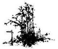
284.
Csakhamar egy újabb elágazáshoz érsz az alagútban. Ha észak felé mész tovább - lapozz a 81-re. Ha délnek tartasz inkább - lapozz a 270-re.

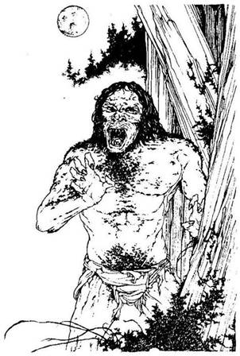
285.
Egy órája alszol már, amikor mély morgásra ébredsz. Szép csöndben felállsz, és megragadod a kardodat. Vársz és hallgatózol. Telihold van, melynek fénye titokzatos árnyakat világít meg. Könnyű léptek zaját hallod, amit szimatolás és egy újabb mély morgás követ. Ekkor az árnyékból egy emberszerű alak bukkan elő tőled jobbrá; amikor közelebb ér hozzád, akkor látod csak, hogy mellét, karját és arcát sűrű barna szőr fedi, és szájából hosszú fogak állnak ki. Ez egy Farkasember, és meg kell küzdened vele.
Farkasember Ügyesség 8 Életerő 9
Ha legyőzöd - lapozz a 388-ra.
286.
Mikor fölemeled a kardodat, hogy lesújts vele, a lény a szemed láttára változtatja az alakját. Teste megnő, és zöld színűvé válik. Hatalmas tüskés farok nyúlik ki belőle, karja megvastagszik, ujjai végén éles karmok nőnek. Arca eltorzul, és hüllőszerűvé válik. Szeme vörös lesz, szájában több tucat borotvaéles fog jelenik meg. Nem Goblin ez, hanem az Alakváltoztató, és meg kell küzdened vele.
Alakváltoztató Ügyesség 10 Életerő 10
Ha legyőzöd - lapozz a 373-ra.
287.
A barlang bejáratánál sietve belenézel a bőrzsákba. 5 Aranytallért és egy kis sárgaréz csengettyűt találsz benne. Szerzeményedet elteszed a hátizsákodba és visszafutsz az útelágazáshoz, ahol északnak mész tovább. Lapozz a 25-re.
288.
A dombról levezető ösvényen mész, amikor feltárul előtted egy füves völgy és mögötte a Fekete Erdő baljós szegélye! A fákon túl van Kőhidafalva, utad végcélja. Amikor a dombok lábához érsz, az ösvény mindkét oldalán nagy kődarabokat veszel, észre. Meglepetten látod, hogy az egyik kő úgy imbolyog a levegőben, akár egy falevél a lágy szellőben. Ha meg akarod nézni ezt a kőtömböt - lapozz a 84-re. Ha inkább északnak mész tovább a völgyben - lapozz a 245-re.
289.
A keskeny, növényekkel benőtt ösvény kanyarogva vezet be a sűrű erdőbe. Különös madárhangok visszhangoznak a fák között. Nemsokára egy útelágazáshoz érsz. Ha nyugat felé mész tovább - lapozz a 76-ra. Ha északnak folytatod az utadat - lapozz a 147-re.
290.
Kivont karddal lépsz be a barlangba. Az Ogre kiejti a kezéből a facsészét és kihúzza övéből a kőbuzogányt. Morogva támad rád. Készülj fel a harcra:
Ogre Ügyesség 8 Életerő 12
Ha legyőzöd - lapozz a 385-re. Elmenekülhetsz, ha akarsz - rohanj vissza az ösvényhez és fordulj északnak - lapozz a 358-ra.

291.
Amint észak felé mész a mezőn át, a fű egyre alacsonyabb lesz, és a föld felszíne lágyan emelkedni kezd. A távolból alázúduló víz moraját hallod. Csakhamar egy széles folyóparthoz érsz. A folyó egyik részén a víz csendes, nyugodt, de veled szemben, ott, ahol a folyómeder összeszűkül, és a sziklákon és köveken át hömpölyög, egy sziklafalról hevesen zúdul alá a vízesés. A vízesés szélén lépcsősor vezet 1e a mélybe, de ezt alig lehet látni a permetező víz miatt. A folyó túlpartján egy ösvényt látsz, mely észak felé vezet. A folyó csendes részén, tőled jobbra, egy cölöphöz kikötött csónak ring a vízen. Mit teszel?
Lemész a lépcsőkön a vízesés
aljába? Lapozz a 335-re.
Átevezel a csónakkal a
túlpartra? Lapozz a 145-re.
292.
A gyertya fénye baljós árnyakat rajzol a szoba falára. A halovány fény megvilágítja a doboztető lapjára vésett öregember arcát. Ekkor hirtelen a szoba túlsó sarkából, az árnyékból egy csontváz lép elő. Odamész hozzá, és közelebbről szemügyre veszed. A csontváz kicsiny, és koponyájából
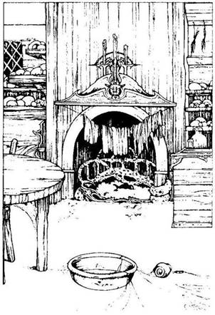
éles fogak állnak ki. Vagy egy Ork, vagy egy Goblin csontváza lehet ez. Odamész a kődobozhoz. Úgy látod, mintha a tetején lévő kőlapot el lehetne mozdítani. Ha fel akarod emelni a kőlapot, lapozz a 95-re. Ha nem törődsz a kőlappal, és visszamész az ösvényhez, ahol északnak fordulsz - lapozz a 112-re.
293.
A barlang falába gondosan bevájt lépcsökön mész föl, melyek nedvesek a falról lecsöpögő nyálkától. A tetőig három, egymástól különböző távolságra lévő kis beugró nyílik a lépcsők mellett lévő falból. Mindegyik három méter magas. Az első beugrónál megállsz és benézel a sötét félhomályba. Egy hordót és egy faládát látsz bent. Mit teszel?
Benézel a hordóba? Lapozz a 215-re.
Megpróbálod kinyitni a
faládát? Lapozz a 389-re.
Továbbmész a lépcsőn? Lapozz a 88-ra.
294.
A kunyhó egyetlen szobájában egy tűzhely, egy faágy, egy asztal, két szék, egy mosogatótál és egy faláda van, meg madártojással megrakott polcok. A padlót vastagon borítja a por, és úgy nézed, hónapok óta nem lakik itt senki. Mit teszel?
Átkutatod a tűzhelyet? Lapozz a 106-ra.
Kinyitod a faládát? Lapozz a 175-re.
Kimész a szobából, és északnak folytatod
az utadat? Lapozz a 288-ra.
295.
Zuhanás közben beütöd a fejedet a kút oldalába. Van-e rajtad sisak? Ha van - lapozz a 225-re. Ha nincs - lapozz a 30-ra.
296.
Amikor visszaérsz az útelágazáshoz, onnan vagy délnek mész vissza a kúthoz - lapozz a 398-ra, vagy nyugat felé folytatod az utadat - lapozz a 284-re.
297.
Amikor átveszi a fizetségét, a Gnóm elmosolyodik, és közli véled, hogy a kőkriptában egy Goblin csontvázát látta. Lehetséges, hogy az általad keresett két Goblin közül az egyiké volt a csontváz, de az is lehet, hogy nem. Azt is elmondja, hogy a kripta valahol északra van az erdőben, de hogy hol, azt pontosan nem tudja. Mérges vagy, amiért a Gnóm nem tud többet mondani, és gyors léptekkel elindulsz ismét nyugat felé - lapozz a 67-re.
298.
Már vagy egy órája alszol, amikor velőtrázó ordításra ébredsz. Az üvöltést a közelből, nyugat felől hallod. Az éjszakai égen telihold világit. Miközben a holdat nézed, hirtelen egy hatalmas fekete alakot pillantasz meg, mely feléd közelít a bokrok közül. Azonnal megfeledkezel az üvöltésről és kardodat
megragadva talpra szökkensz. Ebben a pillanatban egy Óriáspók ereszkedik le melléd, és fekete tüskés lábain cipelve ormótlanul nagy gömbölyű testét, elindul feléd. Mivel nem akarod itt hagyni a holmidat, kénytelen vagy megküzdeni vele.
Óriáspók Ügyesség 7 Életerő 8
Ha legyőzöd - lapozz a 140-re.
299.
Úgy rohansz a vízzubogás irányába, amilyen gyorsan csak tudsz, nyomodban a Gyilkos Méhek rajával. Csakhamar elérsz a folyópartra, ahol gondolkodás nélkül beleveted magad a vízbe. Visszatartod a levegőt, ameddig csak tudod, és nem bújsz ki a víz alól. Amikor ismét felbuksz, a Gyilkos Méheknek nyomát sem látod. Kievickélsz a vízből a partra, és szárítkozni kezdesz. Átvizsgálod a hátizsákod tartalmát, és rémülten veszed észre, hogy az összes Élelmed tönkrement a vízben. Körülnézel és látod, hogy az ösvény egy öreg, roskatag fahíd túloldalán észak felé folytatódik. Ha átmész a hídon a túlsó partra - lapozz a 65-re. Ha nem bízol a hídban, és inkább átúszol a folyón - lapozz a 75-re.
300.
Az ösvény mindkét oldalát megvilágítja a fák között átszűrődő napfény. Az erdő egyre ritkul körülötted. Az ösvény csakhamar egy széles tisztáshoz ér, melyen hatalmas fű nő. A rét mögött dombok emelkednek. Néhány ösvény innen nyugat felé vezet. Mit teszel?
Továbbra is északnak tartasz? Lapozz a 138-ra.
Nyugatnak folytatod az utadat? Lapozz a 331-re.
301.
Átkutatod a Hobgoblinok zsebeit, és találsz bennük 3 Aranytallért, egy picinyke rézfurulyát meg két kukacrágta kekszet. Egyikük nyakában még egy egérkoponyákkal díszített nyakláncot is találsz. Ha bármelyik tárgyra igényt tartasz ezek közül, megteheted, és jelöld a Felszerelési Tárgyak listáján. Lapozz a 157-re.
302.
A helyére fordítod a csuklódon a karkötőt. Erő hatja át a karodat, és felugrasz örömödben. Az Ügyesség Karkötője került hozzád, és általa minden alkalommal, amikor majd a jövőben kockadobással fogod megállapítani a Támadóerődet, a kapott pontszámhoz hozzáadhatsz 1-et mindaddig, amíg ezt a karperecet viseled. Jelöld ezt a Kalandlapodon! Lemászol az indán, és észak felé indulsz tovább az ösvényen. Lapozz a 109-re.
303.
Magasan az égen egy hatalmas repülő lényt pillantasz meg. Sokkal nagyobb, mint bármely más, általad eddig látott madár. Amikor a közeledbe ér,
ránts kardot. Hangosan vijjog, hosszúkás feje és éles fogakkal teli szája van. Hüllőhöz hasonló zöld bőr fedi a testét, szárnyainak átmérője pedig öt méter lehet. Nem tudsz elrejtőzni sehol a völgyben, így hát meg kell küzdened a lecsapni készülő Pterodactylusszal.
Pterodactylusz Ügyesség 7 Életerő 8
Ha legyőzöd - lapozz a 247-re.
304.
Lábad csak sokára fog meggyógyulni. Találsz két ágat a földön és derékszíjaddal a lábadhoz kötözöd őket. Leülsz pihenni. Öt Élelemadagot kell elfogyasztanod ahhoz, hogy kellő erőre kapj. Csak ezt követően tudsz továbbmenni. Ha nincs öt adagnyi Élelmed - éhen halsz. Ha van ennyi Élelmed és így életben maradsz, csökkentsd ügyességedet 2 ponttal. Szemed most már kellően alkalmazkodott a sötétséghez, és így jól látod, hogy az alagút csupán alig egy méter magas. Négykézláb mászva kell átkutatnod. Lapozz a 69-re.
305.
Megkerülöd a Sárkány mozdulatlan tetemét, és nekiállsz átkutatni a fészkét meg a sok szerteheverő törmeléket. Találsz egy páncélkesztyűt, egy
Hajítókést, 10 Aranytallért meg egy aranygyűrűt. Elrakod a kést meg az Aranyat a hátizsákodba. Mit teszel?
Felpróbálod a páncélkesztyűt? Lapozz a 374-re.
Felhúzod az aranygyűrűt? Lapozz a 133-ra.
Nem nyúlsz semmihez, hanem továbbmész
az ösvényen északnak? Lapozz a 360-ra.

306.
Az ösvény bal oldalán, a fák között egy repkénnyel és mohával benőtt házat pillantasz meg. Ha meg akarod nézni ezt a házat - lapozz a 391-re. Ha továbbmész északnak az ösvényen - lapozz a 112-re.
307.
Az apró emberke felriad álmából, és egyensúlyát vesztve leesik a gomba tetejéről. Káromkodik egy nagyot, majd visszapattan a gomba tetejére. - Ki tette ezt? Ki tette ezt? - kiabálja mérgesen. Ha akarod, megtámadhatod a Gnómot - lapozz a 192-re. Ha akarod, elbeszélgethetsz vele - lapozz a 271-re.
308.
Miután megettél néhány gombát, rettenetesen felkavarodik a gyomrod. Arra gondolsz, hátha
Alakváltoztatóvá válsz tőle! Végül azonban megkönnyebbülten tapasztalod, hogy ez nem következett be, és a gyomorfájásod is elmúlik. Hogy örömöd mégse legyen teljes, meg kell tudnod, hogy az úgynevezett Összekeverő gombából ettél, s ezért eddigi ügyesség pontjaid lesznek a szerencse pontjaid, és fordítva, szerencse pontjaid lesznek eddigi ügyesség pontjaid. Kissé furcsán érzed ugyan magad, de azért továbbmész északnak. Lapozz a 148-ra.
309.
Az ösvény derékig érő fűben visz tovább. Bár kellőképpen tájékozódsz, mégis tartasz kissé azoktól a teremtményektől, amelyek esetleg odalopakodhatnak hozzád. Bal kéz felől a fű hirtelen megmozdul, két facső emelkedik ki belőle, és egyenesen téged vesz célba. Két Pigmeus fúvócsöve ez, melyből egy-egy nyílvesszőt lőnek ki rád. Kétszer Tedd próbára a szerencsédet. Ha mindkét alkalommal szerencséd van, egyik nyílvessző sem talál el. Lapozz a 77-re. Ha nincs szerencséd, egy vagy két nyílvessző talál el a nyakadon. Lapozz a 197-re.
310.
A Barlangi Troll feláll, és hangosan rád mordul. Igen mérges, amiért betolakodtál a barlangjába, és bunkósbotját lengetve rád támad. Meg kell küzdened vele!
Barlangi Troll Ügyesség 8 Életerő 9
Ha legyőzöd - lapozz a 101-re.
311.
Átkutatod a ruhájukat és erszényeiket, de csupán 2 Aranytallért találsz, amit elteszel a hátizsákodba. Ismét elindulsz északnak az ösvényen, és csakhamar azt veszed észre, hogy a fák ritkulni kezdenek körülötted az ösvény mindkét oldalán. Végül az ösvény kiér a fák közül, és egy szántóföld szélénél találod magad. Kiértél a Fekete Erdőből! Lapozz a 204-re.

312.
Átlépsz a Ghoul tetemén, és belenézel a koporsóba. Találsz benne 25 Aranytallért, de örömöd még sokkal nagyobb, amikor felfedezed azt a tárgyat, amit a Ghoul fejtámaszként használt - egy bronzból készült kalapácsfejet, melybe egy G betűt véstek. Boldogan teszed el szerzeményeidet a hátizsákodba, és elindulsz északnak az ösvényen. Lapozz a 112-re.
313.
Nincs túl sok érdekes dolog a barlangban. Egy szalmamatrac, néhány kőkorsó, egy szék és egy asztal az, ami azonnal a szemedbe tűnik, de az ágy fölötti kőpolcon egy kicsinyke ezüstdobozt veszel észre. Ha ki akarod nyitni a dobozt - lapozz a 240-re. Ha nem törődsz az ezüstdobozzal, és odamész a ketrecbe zárt lényhez - lapozz a 85-re. Ha úgy döntesz, hogy azonnal elhagyod a barlangot, és nem viszed magaddal az ezüstdobozt, hanem folytatod az utadat északnak - lapozz a 358-ra.
314.
Az ösvény meredeken kanyarogva visz fel a dombra. Mire felérsz a dombtetőre, már melegen süt a nap. A távolban körös-körül a Fekete Erdő sűrű zöldjét látod. A hátad mögött a magas füvet köd üli meg, de előtted már ott a napsütötte völgy. Minden csendes. Amikor elindulsz lefelé, a domb túloldalán, az ösvény jobb oldalán egy aprócska fakunyhót pillantasz meg, melynek ajtaja kissé nyitva van. Ha be akarsz menni a kunyhóba - lapozz a 294-re. Ha inkább továbbmész északnak - lapozz a 288-ra.
315.
Benyitsz a durva faajtón és belépsz a kopottas kunyhóba. Mit teszel?
Megszólítod az öregasszonyt? Lapozz a 42-re.
Kardot rántasz? Lapozz a 342-re.
316.
Végül is visszafekszel aludni, de nyugtalanul töltöd az éjszakát. Reggel összeszeded a holmidat, és elindulsz az ösvényen északnak a dombok felé. Lapozz a 198-ra.

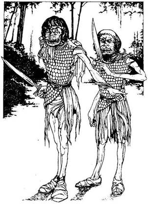
317.
Kardot rántasz, és úgy várod a veszekedő hangok tulajdonosait. Két nyurga teremtmény bukkan fel előtted, rongyos ruha van rajtuk, melyet páncéling takar. Amint megpillantanak, nyomban elhallgatnak. Hobgoblinokkal állsz szemben, akik kardjukkal támadnak rád.
Ügyesség Életerő
Első Hobgoblin 6 6
Második Hobgoblin 5 7
Ha legyőzöd őket - lapozz a 301-re. Ha Elmenekülsz csata közben - lapozz a 41-re.
318.
Beugrasz az ösvény melletti sűrű bokrok közé. Amikor kilesel a levelek közül, két hatalmas lábat látsz, mely egy óriás termetű férfihoz tartozik, aki ott megy el előtted az ösvényen. Amint eltűnik, előbújsz rejtekhelyedről, és tovább folytatod az utadat észak felé - lapozz a 231-re.
319.
Van-e nálad Szökkenő Csizma? Ha van - lapozz a 228-ra. Ha nincs - lapozz a 14-re.
320.
Megragadod a lábat, és teljes erőből lerántod. Egy aprócska termetű zöld bőrű Gremlin zuhan le hangos üvöltéssel a vízbe. Kihasználod a kedvező alkalmat, és amíg a Gremlin ott kapálódzik a vízben, felmászol a létrán. Kimászol a kútból, és visszamész az ösvényhez - lapozz a 362-re.
321.
Haláluk pillanatában a Harcos Bábuk színes tócsává válnak. Egy perccel sem akarsz tovább itt maradni, ebben a nyirkos, dohos üregben, és felmész a lépcsőkön. Lapozz a 107-re.
322.
Az ujjadon lévő gyűrű fénye áthatol a fatörzs és az alagút sötétjén. Karnyújtásnyira tőled egy selyemzsinóron lógó aranymedált pillantasz meg, mely a fa tövének belsejében egy faszögön lóg. 5 Aranytallért ér. Elteszed a hátizsákodba. Az alagút körülbelül öt méter mély. Van-e nálad Mászókötél? Ha van - lapozz a 94-re. Ha nincs - lapozz a 380-ra.
323.
Észak felé mész, és csakhamar elérsz egy útelágazáshoz. Merre mész tovább?
Északnak? Lapozz a 291-re.
Nyugatnak? Lapozz a 99-re.
Keletnek? Lapozz a 102-re.
324.
Megkerülöd a kunyhót, és odamész a bejáratához, ahol egy kis oszlop tetején egy nagy kék vázát találsz. Egy lelket sem látsz sehol. Benyitsz az ajtón, de bent sincs senki. A kunyhó teljesen üres, egyetlenegy bútor vagy tárgy sincs benne. Kimész, és megvizsgálod a kék vázát. Belenézel. Bár a nap ragyogóan süt, mégsem látsz a pereménél mélyebbre. A vázában titokzatos sötétség honol.
Megrázod, és ekkor a belsejéből valami zörgést hallasz. Mit teszel?
A földhöz vágod a vázát? Lapozz a 250-re.
Belenyúlsz a vázába? Lapozz a 161-re.
Nem foglalkozol a vázával, hanem visszamész
az ösvényhez, és továbbmész
északnak? Lapozz a 149-re.
325.
Már vagy egy fél órája alszol, amikor lágy szárnycsapkodás hangja ébreszt fel. Felülsz és megmarkolod a kardodat. A telihold fényénél három nagy alakot veszel észre, amint feléd repülnek. Denevérnek nézed őket, de amikor a közeledbe érnek, akkor a fogukról kétséget kizáróan kiderül számodra, hogy ezek Vámpír denevérek. Ha van nálad Fokhagymagerezd - lapozz a 268-ra. Ha nincs - lapozz a 79-re.
326.
Ott állsz a folyóparton, és úgy látod, hogy a túlpartra csak és kizárólag csónakkal tudsz átjutni. Lapozz a 145-re.
327.
Bent kőlépcsők vezetnek le az ajtótól a sötét mélységbe. Oly sötét van, hogy semmit sem lehet látni. Ha le akarsz menni a lépcsőkön - lapozz a 351-re. Ha el akarod hagyni a házat, térj vissza az ösvényhez, és ott menj tovább északnak. Lapozz a 112-re.
328.
Annak ellenére, hogy a szék kemény tölgyfából készült, igencsak kényelmesnek bizonyul. Nekiállsz enni, de ahelyett hogy erősebbnek éreznéd magad, egyre gyengülsz. Az Életerő-elszívó széken ülsz, s így annak ellenére, hogy egész Élelmiszeradagodat elfogyasztottad, mégis 4 életerő pontot vesztesz. Ha életben maradsz, sikerül lassan felállnod a székről, és elvonszolod magad az ösvényen észak felé. Lapozz a 118-ra.
329.
Az egyre ritkuló fák között átsüt a napfény és megvilágítja az ösvényt. Lassan kijutsz a fák közül, és egy magas fűvel benőtt nagy rétre érsz. A rét mögött dombok emelkednek. Néhány ösvény keletnek vezet. Mit teszel?
Északnak folytatod az utadat? Lapozz a 180-ra.
Keletnek mész tovább? Lapozz a 252-re.
330.
Már vagy egy órája alszol, amikor rémisztő üvöltés ver fel álmodból. Fát teszel az izzó parázsra és feléleszted a tüzet. Telihold van. Háttal a szikláknak, a tűzzel szemben kivont karddal felállsz és vársz. Csakhamar meggyőződsz róla, hogy figyelnek, és ekkor három szempánt veszel észre, mely a tűz fényében izzva mered rád. Újabb üvöltés hasít bele az éjszakába, melyet mély morgás kísér. A három szempár lassan közeledik feléd. Az árnyékból három Farkas bukkan elő, és rád veti magát. Egyenként támadnak rád.
Ügyesség Életerő
Első Farkas 7 7
Második Farkas 8 7
Harmadik Farkas 7 9
Ha legyőzöd őket - lapozz a 116-ra.
331.
Csakhamar egy újabb útelágazáshoz érsz. A dél felé tartó ösvény visszavezet az erdőbe, ezért úgy döntesz, nem mész arra. Merre mész tovább? Nyugat felé? Lapozz a 124-re. Észak felé? Lapozz a 309-re.
332.
Egy újabb elágazáshoz érsz az ösvényen. Miután megnézed Nagyláb térképét, úgy döntesz, hogy ismét északnak mész tovább Kőhidafalva felé, nem pedig a keskeny ösvényen nyugatnak. Lapozz a 103-ra.
333.
A korona ragyogóan illik a fejedre. A két Harcos Bábu félelemmel vegyes tisztelettel tekint fel rád. Fejeden a koronával valami beszédfélét hallasz, s rögtön rájössz, hogy a Harcos Bábuk telepatikus úton kívánnak veled kapcsolatot teremteni. Közlik veled, hogy te vagy az új uruk, és parancsaidat várva megkérdezik tőled, vajon mit tegyenek a piros kalapos új gombasorral. Úgy döntesz, hogy nem akarsz a Harcos Bábuk és dolgozók ura lenni, és a koronád felé nyúlsz. Ekkor rémülten veszed észre, hogy kezeden a bőr ijesztően megfonnyad,
elszürkül. Megpróbálod levenni a koronát a fejedről, de az meg sem moccan. Ez a gonosz koronája, és most új gazdára lelt. Külsőd fokozatosan megváltozik, felöltöd a Tűzdémon alakját és színét. Sorsod megpecsételődött, és kalandod itt véget ér...
334.
A dombok között feltűnik a hosszan elterülő völgy zöldje és a mögötte húzódó Fekete Erdő baljós szegélye! A fákon túl ott van Kőhidafalva - utad vége. Amikor a völgy széléhez érsz, az ösvény kétfelé ágazik el: Ha nyugat felé mész tovább - lapozz a 113-ra. Ha keletnek mész - lapozz az 51-re.
335.
Lemész a csúszós lépcsőn a vízesés aljába. Amikor feltekintesz, egy csodálatos szivárványt pillantasz meg a vízcseppek özönében. Lenn olyan sötét van a vízesés aljában, hogy egyszerűen nem látod, hová vezetnek a lépcsők. Ha át akarsz menni a vízfüggönyön - lapozz a 181-re. Ha visszamész a lépcsőkön - lapozz a 326-ra.
336.
Iszonyatos fájdalmat érzel a gyomrodban, mely kezd szétterjedni az egész testedben. Ha van nálad Ellenméreg - lapozz a 21-re. Ha nincs - lapozz a 108-ra.
337.
Végül a fák ritkulni kezdenek, és az ágak között áttörő napsugár megvilágítja az ösvény mindkét oldalát. Az ösvény kiszélesedik, és ekkor, néhány méterre jobbra egy hatalmas barlang bejárata tárul fel előtted. Ha be akarsz menni a barlangba, hogy megnézd, mi van benn - lapozz a 230-ra. Ha inkább továbbmész északnak az ösvényen - lapozz a 358-ra.
338.
A mérges gáztól könnyezni kezdesz. Amíg megtalálod az Orrszűrődet és beleteszed az orrodba, visszatartod a levegőt. Megpróbálsz levegőt venni, és úgy látod, minden rendben van. Egy idő után a gázfelhő eloszlik az arcod körül. Berakod az ezüstdobozt a hátizsákodba. Ha oda akarsz menni a ketrecbe zárt teremtményhez - lapozz a 85-re. Ha inkább elhagyod a barlangot, és északnak folytatod az utadat - lapozz a 358-ra.
339.
Lágyan hömpölygő folyó partjához érsz. A folyón egy roskatag öreg fahíd ível át, és a túlparton az ősvény észak felé folytatódik. Ha a hídon akarsz átmenni a túlpartra - lapozz a 65-re. Ha nem bízol a hídban, és inkább átúszol a folyón a hátizsákodat a kezedben tartva, hogy megvédd a víztől - lapozz a 75-re.
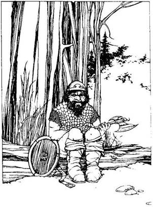
340.
Amint ott mész az ösvényen, egy apró emberkét pillantasz meg, aki egy fatönkön ül az út szélén, vassisakkal a fején, páncélingben. Ez egy Törpe, és nem örül igazán a jelenlétednek. Mit teszel?
Megpróbálsz beszélni vele? Lapozz a 141-re.
Kardot rántasz és rátámadsz? Lapozz a 347-re.
Lelököd a fatönkről, és továbbfutsz keletnek
az ösvényen? Lapozz az 59-re.
341.
Kezedben szinte elviselhetetlen a fájdalom, de mégis kibírod. A váza aljában számos tárgyat tapintasz ki. Marokra fogod őket, és kihúzod a vázából. Kezeden sérülésnek még a nyomát sem fedezed fel. Amikor megnézed, mit találtál, a következő dolgokat látod: 5 Aranytallér, egy sárkányfog, egy üvegfiola, benne az Erő Itala, mely 5 Életerő ponttal növeli erődet, ha megiszod. Nyersz még I szerencse pontot, és menj vissza az ösvényre, és indulj tovább északnak. Lapozz a I49-re.

342.
Amikor kardot rántasz, az öregasszony, aki eddig semmi érdeklődést nem tanúsított irántad, dühös lesz. Az asztal fiókjából elővesz néhány száraz virágot, és a szirmokat szétdörzsöli a tenyerében.
Édes illat tölti be a szoba levegőjét, és ekkor hirtelen úgy érzed, mintha forogni kezdene körülötted a világ. Ha van nálad Koncentrálást elősegítő fejpánt - lapozz a 158-ra. Ha nincs - lapozz a 11-re.
343.
Odateszed az Aranytallért az útjelző oszlop tetejére, ahogy azt a varjú kérte. Ekkor a madár így szól: - Menj észak felé. - Megkérdezed a varjút, vajon miért van szüksége az Aranyakra, erre elmondja, hogy 30 Aranytallért kell fizetnie Yaztromónak azért, hogy az ismét visszaváltoztassa emberré. Elbúcsúzol a varjútól, és ha a tanácsát megfogadva észak felé mész tovább - lapozz a 8-ra. Ha inkább kelet felé folytatod az utadat - lapozz a 239-re.
344.
Kardod élével megpróbálod felfeszíteni a csapdát. A hosszú köntöst viselő idegen belülről nekiveselkedik a csapdának, és az végül kinyílik. Miközben egyre csak hálálkodik, elmondja, hogy rég eltűnt. testvére után kutat itt az erdőben, aki valószínűleg remeteként él valahol az erdő mélyén. A gyökereken átbukdácsolva visszatértek az ösvényhez. Felajánlod neki, hogy tartson veled északnak, de ö udvariasan elutasít, mondván, hogy úgy hiszi, a testvére valahol délen él. Kezet ráztok és elbúcsúztok. Lapozz a 36-ra.

345.
Egyre jobban fáj a gyomrod, és homlokodat kiveri a veríték. Ráz a hideg. Vesztesz 4 életerő pontot. Ha még mindig életben vagy, lassan-lassan elmúlik a fájdalom. Nincs értelme, hogy továbbra is itt maradj, és odamész a barlang túlsó falába vájt lépcsőkhöz. Lapozz a 293-ra.
346.
Arragon fölemeli a jobb kezét, széttárja ujjait és így szól: - Nos, idegen, hogyan döntöttél? Ha átadod Arragonnak azt, amit kíván tőled - lapozz a 32-re. Ha nem törődsz a fenyegetőzésével - lapozz a 111-re.
347.
A Törpe bátor öreg harcos, és ügyesen bánik baltájával.
Törpe Ügyesség 8 Életerő 5
Ha legyőzöd - lapozz a 363-ra.
348.
A férfiak karjukat a magasba emelve vígan ugrándoznak örömükben, amikor látják, hogy megpróbálod kihúzni a nyílvesszőt a karodból. Összeszorítod a fogadat, és húzni kezded kifelé a nyílvesszőt, mely végül is kijön. A két férfi, szinte teljesen megfeledkezve magáról, hangosan nevet. Úgy látod, rólad is megfeledkeztek. Ha meg akarod támadni a Vad Dombi Embereket - lapozz a 43-ra. Ha elmész mellettük az ösvényen, amíg ők nevetgélnek - lapozz a 188-ra.
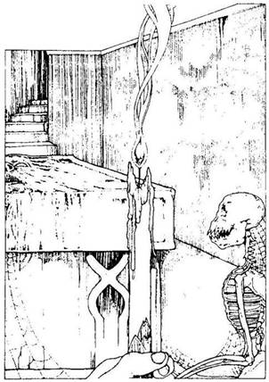
349.
Odaérsz az útelágazáshoz. Nem mész tovább a déli úton, mely visszavezet az erdőbe, hanem mehetsz északnak - lapozz a 291-re, vagy folytathatod az utadat keletnek - lapozz a 102-re.
350.
Benyúlsz a hátizsákodba, előveszed azt a kis szövetzacskót, amelyben a kapszulákat tartod: Öt fényesen csillogó, piros kapszula van benne. Egyet kiveszel, és a feléd közeledő Faember felé hajítod. A lába előtt csapódik a földhöz, és fehér füstfelhőt lövellve felrobban. Lángnyelvek csapnak fel a földről, és meghátrálásra kényszerítik a Faembert. Kihasználod a kedvező alkalmat, és a maradék kapszuláidat is odahajítod a Faemberhez. A lángok körbeölelik a fát, és így sikerül elfutnod mellette. Nem sokkal később már jó messzire jársz tőle, és abbahagyod a futást. Amint észak felé mész, örömmel tapasztalod, hogy a fák egyre ritkulnak körülötted. Lapozz a 329-re.

351.
Óvatosan tapogatózva lépkedsz lefelé a kőlépcsőkön. Szemed lassan megbarátkozik a sötétséggel, és ekkor a lépcső aljában sikerül kivenned néhány alakot. Egy magas mennyezetű, kerek kis szobában állsz. A padlót vastag porréteg takarja, és pókhálók szövik be a szoba minden zugát. A szoba közepén egy közel két méter magas, egy méter
széles kőláda áll. A tetejét hatalmas kőlap zárja le. A szoba kőfalából egy kis beugró nyílik, melyben egy gyertya áll. Ha meg akarod gyújtani a gyertyát - lapozz a 292-re. Ha visszamész a lépcsőkön az ösvényhez, és ott északnak indulsz tovább - lapozz a 112-re.
352.
A Majomember igen fürgén mozog a fa körül, és csak nehezen tudsz a kardoddal bánni. 2 pontot le kell vonnod minden Fordulóban a Támadóerődből.
Majomember Ügyesség 8 Életerő 7
Ha te győzöl - lapozz a 207-re. Elmenekülhetsz, ha leugrasz az emelvényről az ötméteres mélységbe. Lapozz a 156-ra.
353.
Amikor magadhoz térsz, ott fekszel a kunyhó előtt a földön. Felülsz és megnézed a hátizsákodat. Az összes Élelmed eltűnt! Szerencsére más nem hiányzik, és a kardod is megvan. Benézel a kunyhóba, de nincs már bent senki. Ha át akarod kutatni a kunyhót, hátha találsz benne valami hasznosat - lapozz a 26-ra. Ha inkább elhagyod ezt a helyet, és észak felé folytatod az ösvényen az utadat - lapozz a 220-ra.
354.
Quin hitetlenkedve rázza meg a fejét. Feláll, és némán odamegy a kunyhó végében álló faládához. Felemeli a fedelét, és egy apró üvegfiolát vesz ki belőle. Átadja neked, majd visszamegy az asztalhoz, ahol búsan lehuppan a székére. A fiolában
lévő por megcsillan a fényben, amikor elteszed a hátizsákodba, majd távozol a kunyhóból. Amikor már kinn vagy, visszamész az ösvényen az elágazáshoz. Lapozz a 349-re.
355.
Egy újabb útelágazáshoz érsz. Itt kelet felé mész és nem délnek. Lapozz a 340-re.
356.
Az Erdei Óriás ruhái között egy rézlámpást találsz, melynek belsejében egy zöld kanóc van, viszont folyadék nincs a lámpásban. Lehet, hogy ez egy varázslámpa. Mit teszel?
Megdörzsölöd a lámpást és kívánsz
valamit? Lapozz a 34-re.
Megpróbálod meggyújtani a
kanócot? Lapozz a 395-re.
Eldobod a lámpást, és továbbmész
északnak? Lapozz a 231-re.
357.
Nyugat felé mész a kanyargós ösvényen, amikor a völgy felé néhány újabb út ágazik el. Nem veszel róluk tudomást, és továbbmész nyugat felé. Végül az ösvény egy útkereszteződésbe torkollik. Most nem a völgy felé mész délnek, hanem észak felé fordulsz - lapozz a 306-ra.
358.
Amint mész az ösvényen, nem veszed észre a falevelek alatt megbújó kötélcsapdát, melyet valaki egy rugósan működő faághoz erősített. Beleakad a
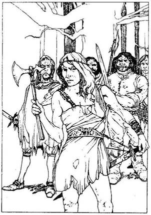
lábad, és ekkor a kötél hirtelen felránt a magasba. Pillanatok alatt ott lógsz fejjel lefelé, lábadon a kötéllel. Tedd próbára a Szerencsédet! Ha szerencséd van, a kardod nem csúszik ki a hüvelyéből, így sikerül átvágnod a kötelet, és kiszabadulsz a csapdából. Lapozz a 40-re. Ha nincs szerencséd, kardod kicsúszik a hüvelyéből a földre, és ott maradsz a levegőben csüngve. Lapozz a 218-ra.
359.
Az ösvény bal oldalán egy kerekes kőkutat látsz, a szélén egy vödörrel. Ha közelebbről meg akarod nézni a kutat - lapozz a 172-re. Ha inkább keletnek folytatod az utadat - lapozz a 281-re.
360.
Amint a keskeny ösvényen mész, hirtelen ágak reccsenését hallod, és halk suttogást. Kardot rántasz, és egy nagy tölgyfának támaszkodva kíváncsian vársz. Ekkor a fák mögül négy férfi és egy nő lép eléd zöld tunikában. Kardokkal és baltával felfegyverezve fenyegetőn néznek rád. Az ifjú nő odalép hozzád, közli veled, hogy behatoltál az ő területükre, és vagy adsz nekik öt tárgyat a hátizsákodból, vagy viselned kell a következményeket. Ha odaadod nekik a kért holmikat - lapozz a 279-re. Ha válaszképpen köpsz egyet, és rájuk támadsz - lapozz a 104-re.

361.
Nem túl messziről kutyaugatást hallasz. Hirtelen egy rémülettől tágra nyílt szemű barna róka rohan el melletted keletnek. A kutyák őrült nyüszítése egyre közelebbről hallatszik. Ha megvárod a falkát - lapozz a 396-ra. Ha az ösvény melletti magas fűben elrejtőzve hagyod, hogy azok tovább üldözzék a rókát - lapozz a 86-ra.
362.
Merre mész tovább? Ha kelet felé - lapozz a 281-re. Ha nyugat felé - lapozz a 238-ra.
363.
Átkutatod a Törpe hátizsákját, melyben egy átlátszó folyadékkal teli, ledugaszolt üvegfiolát találsz. Ha ki akarod inni a fiola tartalmát - lapozz a 68-ra. Ha inkább itt hagyod az üveget, és kelet felé folytatod az utadat - lapozz az 59-re.
364.
Biccentesz a maszkot viselő lovas felé, és jó napot kívánsz neki. Bólint, de nem szól semmit. Elmondod neki, hogy a kőhidafalvai törpéken akarsz segíteni, erre lepattan a lováról, köpenyének gallérját hátraveti és jobb kezét feléd nyújtja, hogy üdvözöljön. Észreveszed, hogy mindegyik ujján egy-egy nagy aranygyűrű csillog. Mit teszel?
Megtámadod, hogy elvedd az
aranyát? Lapozz a 276-ra.
Tovább beszélgetsz vele? Lapozz a 194-re.
365.
A felszálló gáz mérgező, és könnyezni kezdesz. Visszatartod a lélegzetedet, a hátizsákodból előbányászod az Orrszűrőt és behelyezed az orrodba. Óvatosan levegőt veszel, nincs semmi baj. Egy idő múlva a gázfelhő eloszlik. Az ezüstládikát beteszed a hátizsákodba, kimész a barlangból, és folytatod az utadat északnak - lapozz a 358-ra.
366.
Jó napot kívánsz a Kentaurnak, mire ő hasonlóképpen válaszol. Örülsz, hogy végre olyasvalakivel találkozol, aki nem támad azonnal rád! Megkérdezed tőle, vajon tud-e mondani neked valamit, ami hozzásegít ahhoz, hogy célodhoz eljuss, de semmilyen ötlete nincs. Annyit mond csak, hogy ő már öreg, és nem igazán érdeklik a világ dolgai. Nem akar mást, csak egy kevés aranyat öreg napjaira. Felajánlja, hogy 5 Aranytallérért átvisz a túlpartra. Mit teszel?
Elfogadod az ajánlatát? Lapozz a 127-re.
Udvariasan elutasítod az ajánlatát, és
beleveted magad a vízbe? Lapozz a 178-ra.
367.
Halk pukkanást hallasz, és a gomba feje szétnyílik, miközben gáz tör ki belőle. Elborít a mérges gáz. Van-e nálad Orrszűrő? Ha van - lapozz a 60-ra. Ha nincs - lapozz a 222-re.
368.
Nincs már semmi keresnivalód ebben a szobában, ezért úgy döntesz, hogy visszamész a lépcsőkön az ösvényhez, ahol északnak folytatod az utadat. Lapozz a 112-re.
369.
A völgy gyönyörű, üde zöld, szinte csodálkozol, hogy egy ilyen kellemes, nyugodt hely miképp lehet annyi undorító teremtmény otthona. Az ösvényen feltűnik előtted egy jókora termetű, kopaszodó férfi, aki hosszú barna csuhában közeledik feléd. Amikor odaér hozzád, akkor látod, hogy egy barát. Mit teszel?
Ha beszélgetésbe elegyedsz
vele Lapozz a 191-re.
Ha biccentesz felé, és elmész
mellette Lapozz a 390-re.
370.
Vaksötétben botorkálsz. Lassan visszanyered látásodat, és felállsz. Az ösvényen ismét északnak mész tovább. Tudnod kell azonban, hogy amíg a földön feküdtél, egy tárgy kiesett a hátizsákodból. Húzz ki egy tárgyat a Felszerelési tárgyaid közül, és lapozz a 231-re.
371.
A földön rengeteg különböző formájú és alakú, emberi kezet ábrázoló agyagfigura hever. Mindegyiket élénk vörös színűre festették. Egy rézvázában 3 Aranytallért találsz, amit beteszel a hátizsákodba. Semmi más hasznos dolgot nem találsz a barlangban. Visszamászol az alagúton az útelágazáshoz, és ha akarsz, magaddal viszel egy agyagkezet. Lapozz a 93-ra.
372.
Lehajolsz és megpróbálod felemelni a ládát, de az rettenetesen nehéz. Dobj két kockával. Ha a kapott összeg kevesebb, vagy ugyanannyi, mint ügyesség pontjaid száma, sikerrel jársz - lapozz a 48-ra. Ha a kapott összeg nagyobb, mint ügyességed, megsérül a hátad, vesztesz 1 életerő pontot. Annyiszor próbálhatod meg fölemelni a ládát, ahányszor csak akarod. Ha sikerrel jársz - lapozz a 48-ra. Ha nem sikerül felemelned a ládát, úgy döntesz, nem kísérletezel tovább, nehogy újabb sérüléseket szenvedj, és mérgesen hagyod el a szobát. Folytasd az utadat észak felé, és lapozz a 288-ra.

373.
Fáradtan rogysz le a fatörzsre a hosszú csata után. A fekete pálca csupán az Alakváltoztató varázslatának kelléke volt, és már el is tűnt. Akkor a fatörzs tövében néhány lila gombát pillantasz meg. Sose láttál még ehhez hasonlót, de ízletesnek tűnik. Ha enni akarsz belőle - lapozz a 308-ra. Ha inkább északnak folytatod az utadat - lapozz a 148-ra.
374.
Felhúzod a kezedre a páncélkesztyűt és megragadod a kardodat. Belesuhintasz vele a levegőbe, és úgy érzed, most sokkal ügyesebben teszed ezt, mint korábban. A Kardforgató Ügyességet növelő Páncélkesztyű van a kezeden, és mindaddig, amíg rajtad van, Támadóerődet 1 ponttal növelheted. Jegyezd fel ezt a Kalandlapodon. Ha fel akarod próbálni az aranygyűrűt - lapozz a 133-ra. Ha nem törődsz az aranygyűrűvel (vagy esetleg már felpróbáltad), tovább kell folytatnod az utadat az ösvényen észak felé - lapozz a 360-ra.
375.
Egy útkereszteződéshez érsz. Ha továbbra is észak felé folytatod az utadat - lapozz a 150-re. Ha nyugat felé mész innen - lapozz a 236-ra.
376.
Tedd próbára a Szerencsédet! Ha szerencséd van, a Troll nem ébred fel - lapozz a 74-re. Ha nincs szerencséd, véletlenül belerúgsz egy kis kavicsba, mely végiggurul a barlang kövén és felébreszti a Barlangi Trollt - lapozz a 310-re.
377.
Gyorsan utoléred a két barna bőrű Pigmeust. Füvekből készült szoknya van rajtuk, és amikor megállnák és szembefordulnak veled, akkor látod, hogy mindkettőnek az orra egy kis csonttal van átszúrva. Előrántják a tőrüket, és mindketten egyszerre támadnak rád. Minden Fordulóban külön fognak megküzdeni veled, és neked kell eldöntened, vajon melyikükkel küzdesz meg elsőnek. Az általad kiválasztott Pigmeussal küzdj meg a szokásos módon. A másikkal szemben dobj Támadóerőt magadnak, ugyancsak a szokásos módon, de ha a te Támadóerőd nagyobb, mint az ellenfeledé, akkor nem sebzed meg, csupán kivéded a támadását. Természetesen ha az ellenfeled Támadóereje nagyobb, mint a tiéd, akkor ö sebzett meg téged.
Ügyesség Életerő
Pigmeus A 5 5
Pigmeus B 5 6
Ha legyőzted - lapozz a 205-re. Ha Elmenekülsz, fuss vissza az ösvényhez, és rohanj tovább észak felé. Lapozz a 92-re.

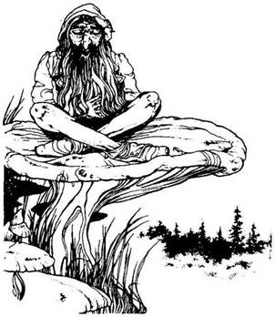
378.
Az ösvény bal oldalán egy apró termetű, hosszú ősz szakállú embert látsz, aki egy gomba tetején ül törökülésben, Élénkpiros zakó, egy sipka és fekete térdnadrág van rajta. Hangosan horkolva alszik. Ha óvatosan megveregeted a vállát, és felébreszted - lapozz a 307-re. Ha szép nyugodtan elmész mellette, és nyugat felé folytatod az utadat - lapozz a 67-re.
379.
Ha megpróbálod befeszíteni az ajtót - lapozz a 73-ra. Ha visszamész az ösvényhez, és ott észak felé fordulsz - lapozz a 112-re.
380.
Ha be akarsz ugrani a fa üregének mélyén meghúzódó alagútba - lapozz a 237-re. Ha visszamész az ösvényhez, és ott északnak fordulsz - lapozz a 144-re.
381.
Nem segítettél utadon a törpéknek, és mivel így nem tudsz Gillibrannak, a királyuknak sem a segítségére lenni, úgy döntesz, hogy keletnek mész tovább, és keresel egy helyet, ahol megpihenhetsz veszélyes kalandod után. Talán majd egyszer ismét nekivághatsz ennek az útnak. Ha ezt teszed, meg kell kerülnöd a Fekete Erdőt, és vissza kell menned Yaztromo tornyáig, hogy még több varázstárgyra tégy szert - lapozz a 98-ra.
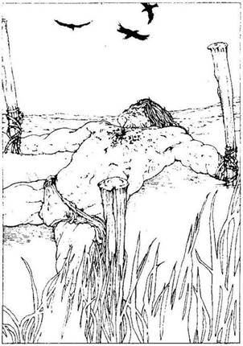
382.
Nyugat felé mész az ösvényen és csakhamar egy újabb útkereszteződéshez érsz. Az észak felé vezető utat választod a déli út helyett - lapozz a 97-re.
383.
Miután átkutatod az Orkok zsákjait és ruháit, 2 Aranytallért és egy apró fasípot találsz. Jelöld ezeket a tárgyakat a Kalandlapodon, ha akarod. Ha eszel a nyárson sült nyúlból, nyersz 2 Életerő pontot. Frissen, kipihenten mész vissza az ösvényhez, és ott észak felé folytatod az utadat. Lapozz a 254-re.
384.
A fű közül nyögéseket hallasz. Fönt a magasban a keselyűk türelmesen várakozva köröznek. Néhány lépés megtétele után egy hatalmas testű, acélizomzatú, undorító külsejű férfit pillantasz meg, aki cölöpökhöz kikötve fekszik a földön. Mindkét kézét és lábát mélyen a földbe vert cölöpökhöz kötözték. A férfi teljesen meztelen, csupán egy ágyékkötő van rajta, és bőrét szétégette a nap. Arcán és testén erős kínzások nyomát fedezed fel. Elfogói szemmel láthatóan nem tudták kiszedni belőle az információt, mivel ő egy Barbár! Ha kiszabadítod a fogságából - lapozz a 128-ra. Ha haldoklásában magára hagyod és visszamész az ösvényhez, amelyen észak felé folytatod az utadat - lapozz a 394-re.
385.
Amikor az Ogre elzúg a földön, a ketrecbe zárt teremtmény még vadabb ugrándozásba kezd. Mit teszel?
Közelebbről megnézed a ketrecbe zárt
teremtményt? Lapozz a 168-ra.
Átkutatod a barlangot? Lapozz a 313-ra.
Azonnal elhagyod a barlangot, és észak
felé folytatod az utadat? Lapozz a 358-ra.
386.
Ismét álomra hajtod a fejedet, de nem jön álom a szemedre. Kora hajnalban már talpon vagy. Összeszeded a holmidat, és ismét észak felé folytatod az utadat az ösvényen. Lapozz a 119-re.

387.
Egy Aranytallér hever előtted a földön. Fölveszed, és ujjaddal felpöccinted a levegőbe, majd zsebre vágod. Nyersz 1 szerencse pontot, és lapozz a 340-re.
388.
Ha a Farkasember harc közben megsebzett - lapozz a 155-re. Ha nem sebesültél meg, nyersz 1 szerencse pontot, és lapozz a 316-ra.
389.
A magasba emeled a kardodat és rávágsz vele a faládára, mely apró darabokra törik. A faszilánkok között 1 Aranytallért találsz. Nyersz 1 szerencse pontot. Ha még nem tetted volna, belenézhetsz a hordóba - lapoz a 215-re. Ha akarsz, továbbmehetsz a lépcsőkön - lapozz a 88-ra.

390.
A távolban feltűnik előtted az erdő sötétbarna fáinak tömör sora. Az ősvény egyenesen a Fekete Erdőbe vezet, és ott kanyarog a kusza gyökerek és bokrok között. Hírtelen kettéágazik az ösvény. Ha észak felé folytatod az utadat - lapozz a 190-re. Ha nyugat felé mész tovább - lapozz a 280-ra.

391.
Az épület háromszor három méteres, és nincs rajta ablak. Az ajtaja kőből készült, és igencsak masszívnak látszik. Nincs rajta kilincs, de úgy látod, hogy a háznak más bejárata nincs. Ekkor a kőajtóban felfedezel egy aprócska kulcslyukat. Van-e nálad ezüstkulcs? Ha van - lapozz a 200-ra. Ha nincs - lapozz a 379-re.

392.
Amikor leguggolsz az ösvény melletti bokrokban, a hangok egyre erősebben hallatszanak. Ekkor két pár, rongyokba bugyolált nyurga láb húz el melletted, hatalmas port kavarva az úton. A hangok csakhamar elhalnak a távolban. Ekkor előmászol a rejtekhelyedről, és elindulsz észak felé az ösvényen. Lapozz a 157-re.
393.
Az ösvény, mely a nyugodt völgy mentén vezet, csakhamar egy útelágazásba torkollik. A déli irányba tartó út visszavezet a dombokhoz, s ezért úgy döntesz, hogy inkább észak felé mész tovább - lapozz a 369-re.
394.
A fű egyre kisebb és kisebb lesz, és a talaj emelkedni kezd a lábad alatt. A távolból vízzubogást hallasz. Csakhamar egy lassan hömpölygő folyó pattjára érsz. A folyó igen sekély, és a túlpartra a vízbe lefektetett köveken lehet átjutni, ahonnan az ösvény tovább folytatódik észak felé. Mit teszel?
Átkelsz a folyón a köveken? Lapozz a 66-ra.
Átgázolsz a sekély vízen? Lapozz a 186-ra.
395.
Anélkül, hogy a kanócot meggyújtottad volna, a lámpából oly erős fény csap ki, hogy szinte vakít. Megbotlasz és elesel. Tedd próbára a szerencsédet! Ha szerencséd van, nem sérülsz meg - lapozz a 154-re. Ha nincs szerencséd, beütőd a fejedet egy fatuskóba - vesztesz 3 életerő pontot. Ha még mindig életben vagy - lapozz a 370-re.
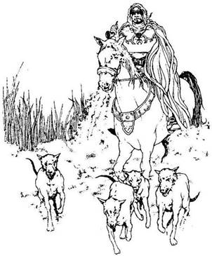
396.
Kardot rántva várod a kutyák falkáját. Hatalmas porfelhőt kavarva érnek oda hozzád, mögöttük egy fehér csődörön egy arcán maszkot, testén hosszú, libegő köpenyt viselő lovas vágtat feléd. A lovas belefúj a kürtjébe, mire a kutyák hirtelen megtorpannak előtted. Négy vadászkutya mered rád, mögöttük mozdulatlanul áll a csődör, orrlyukából hatalmas párát fújva. A maszkot viselő férfi szótlanul néz rád. Mit teszel?
Megszólítod? Lapozz a 364-re.
Rátámadsz a hozzád legközelebb álló
kutyára? Lapozz a 96-ra.
397.
A völgyben folytatod az utadat, ahol elmész egy útkereszteződés mellett, mely délnek visz a dombok közé. Csakhamar egy útelágazáshoz érsz. Itt is az egyik út délnek visz a dombok felé. Ha északnak indulsz - lapozz a 163-ra. Ha inkább kelet felé tartasz - lapozz a 393-ra.
398.
Elérsz az alagút végébe és már éppen le akarsz mászni a kút oldalához támasztott létrán, amikor föntről léptek zaja üti meg a füledet. Ha kinyúlsz a kútból, és megkísérled elkapni az első arra jövő lábát - lapozz a 320-ra. Ha inkább megvárod, hogy a jövevény belépjen az alagútba - lapozz a 193-ra.
399.
Megcélozod Yaztromót, de csak az első lépcsőfokot találod el. Ekkor a varázsló a magasba emeli jobb kezét, és közömbösen néhány szót mormol. Úgy érzed, mintha megállt volna az idő, csupán a villámok fényét látod, és közben úgy érzed, mintha a testedben minden forrna. Amikor bensőd kezd kissé megnyugodni, már tudod, hogy valami rettenetes dolog történt. Testeddel érzed a lépcsők hidegét, és békaperspektívából látod az életet! Yaztromo lehajol hozzád, felemel, és dörgő hangon így szól: - Nos, te bolond harcos, élvezd új életedet! - mondja, és fülsiketítően felkacag. Téged pedig majdnem elejt. Odacsoszog a tölgyfa ajtóhoz, kinyitja, majd kihajít a magas fűbe. Békaként élsz tovább, de kalandod itt véget ér!
400.
Odamész a törpékhez és megkéred őket, hogy vezessenek el Gillibranhoz. Gyanakodva méregetnek, de végül is, sebeidet és szakadt ruhádat látva, ráállnak a dologra. - Ezeket, ugye, a Fekete Erdőben szerezted - mondja az egyik törpe, agyagpipájával a testedet díszítő mély vágásokra mutatva. - Vannak emberek, akik sose tanulnak. A
kalandorok mind egyformák. Én ennek nem látom értelmét. Nyomodban a két törpével elindulsz a falun át, s közben érzed, hogy a törpék népe minden mozdulatodat lesi. Valamennyien mögéd szegődnek, és most már egész díszkíséret halad mögötted. Reménykedve suttognak, morognak egymás között. Csakhamar elérsz egy kőlépcsősor aljába, mely egy kőházba vezet fel. A ház előtt egy fából faragott, díszes trónuson parányi, hosszú szakállas öregember ül. Korona van a fején, de arcát két kezébe temeti, és igencsak szomorú. Felszaladsz a lépcsökön, és közben előveszed a hátizsákodból a kalapács fejét és nyelét. Amikor az öreg törpe ezeket a tárgyakat megpillantja, felcsillan a szeme, és talpra szökken. Mohón magához ragadja őket és közben így kiált: - A pörölyöm! A pörölyöm! Megmenekültünk! Emberek, most megküzdhetünk a trollokkal! A többiek baltákat és kardokat lengetve éljenzésben törnek ki. Elmeséled Gillibrannak, milyen szerencsétlenül járt Nagyláb, és miért döntöttél úgy, hogy te folytatod a küldetését. Az utadba került szörnyekről is említést teszel neki. Gillibran végighallgat, és szomorúan vonja össze a szemöldökét hűséges szolgájának, Nagylábnak halálhírére. Ezt követően trónusának lábánál kinyit egy kis fiókos szekrényt, és kivesz belőle egy kis ezüstdobozkát meg egy arany szárnyas sisakot és átnyújtja.